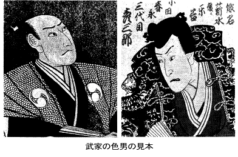
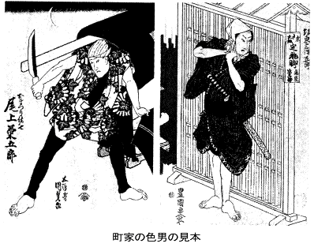
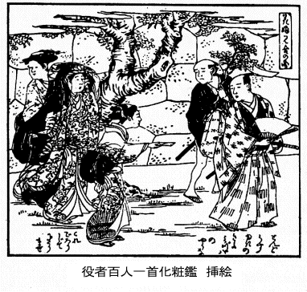
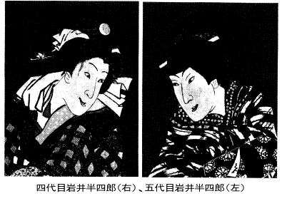

女の世の中
上方者の
瞥見
江戸の女というものは、上方に比べてみると、威勢が強い。中から下の暮しを見ると、亭主よりは女房の方が、一段と上位にいるように見える。上方で
爺嚊で暮している人達にも、そういう風があるけれども、それよりもちょっと調子が高い。自体、江戸は女に勢いをつける土地柄であるようだ。武家の方はのけて、市中で見渡したところが、男の方が多くって女の方が少い。その割合をいうと、男が八九分で、女がようやく一二分というような工合に見える。女が少いために、自然と女が景気立ってきて、威勢がいいんだろうと思われる。女の子を産めば、
縹緻がよければ申すまでもないが、まずい子であっても、何か知らん芸を仕込んで、屋敷奉公にでも出す、といった風がある。それも行き先はいくらでもあるから、小娘のうちから気が強い。そういう調子だから、自然女房に威勢がついて、亭主野郎は頭が上らないらしい、ということを、西沢
一鳳が、『
皇都午睡』の中でいっております。
江戸に男が多くって女が少いということは、何も嘉永の頃に言い出したことではない、大分古くからいわれていることなのです。江戸ばかりじゃない、植民地などというようなところには、いつもそういう傾きがある。江戸のような、新しく開けたところを、古くから開けている上方の人の目から見れば、そういうことが
際立って見えるというのも、無理もない話ではありますが、江戸の町方について、そういう方面を
睨んだものは、古いところにはあまり書き残されたものも見えない。貞享五年に出版した『
色里三所世帯』に、浅草の裏町の模様が書いてある。それは随分思いきった書き方で、書きも書いたりといいたいくらい、思いきった筆つきになっている。江戸の市井の様子を書いたものは、これらが最も古いものだろうと思われる。が、それとても、上方人の眼で、江戸を見て書いたものであります。
先は浅草、その町に今の世の太鼓もち堀貫井土の源次かたに借宿、......世は堪忍にてをさまつた證拠を見せんと、我住うらだなの長屋作りを、切窓より一軒一軒のぞかせけるに、女といふものは、丹後ぶしの浄瑠璃本にて見るより生はなかりけり、先男世帯にして四五人、食はまはり焼に、安倍茶の荷ひ売と見えしが、駿河よりかせぎにくだり、中にも二十五六なるさかんの男、ふんどしかきなをして無常を観じ、我女をせぬ事十三年、長老をのぞむ中のぼりの出家も、只は道中をとをらじ、といふ、又ひとりは、貫ざし売だめ六七百つなぎ、是にてよきもの一夜かふて、浮世の思ひ出にといひしが、いやいやけふも十八文の利を見かけ、板橋ちかくの二里ある所へ行て肩をはらして、釜払が男を旦那さまといふ事をおもへば、今四五年せいでも命は有物ぞ、作蔵だまれ、とむす子に異見するごとく成もをかし、其隣には、高野非寺里にやとはれ男、三人一所にありしが、夜は鬼界が嶋のこゝちして、蛤汁の集銭出し、外に慰む事もなく、こんな所へ、ひよつと後家がわるく共三人来らば、おそらくいけてかへさじと、腰ぼねのふとくたくましきが、いなものにかつえける、其次の家には、四十ばかりの男、最後ちか付、跡や枕に友だちと見えしが、もはや此うへは喰て見たい物はないかといへば、今死ても借銭は一文もおはず、何思ひ残す事もないが、一生のねがひに、せめて一夜女のあるあそび所に行て、日比つゝしみ置し淫乱して、其女をすぐに先に立て往生したい、と涙をこぼす、其又奥に絹売と見えしが、十八九なる角前髪を折檻して、拙者もわるい事があつたによつて、大かたの事は見ゆるせど、おのれあまりなるぞんざいして、宵から夜の明るまで人をゆらつかせ、腕てんがうかく程こそあれ、あつたら鼻紙をつゐやしける、まことの女に出あふた時は、紙に身袋を畳か、といふ、地尻には、上人なりぞこなひの法師、いな所に身を隠し、流石むかしの出家かたぎ残りて、目黒魚もこのまず、人のうへそしらず、さのみ欲心もなく、いつはりの世にそれもいはず、ずいぶん見事なる人相なるが、精進腹いつとなくやせて、色あをく便りなく、杖つかずには一尺ありかず、たのみすくなき御坊の庭に、松桜は植ずして、椶櫚の木、八ッ手にしげらせて、明くれこれをながめ、人のいひ伝へしにも偽あり、腎精からす物といふにより、見る事はさておき、毎日せんじて呑ども、かへつて其ひとついきつて、ざんじもやむ事なし、汝本来馬の物にもあらず、とうつても見しやいても立通せば、我身ながらあきれて、いかなる女人にても、爰にむかひ、第十八番の願文をすゝめさづけんと、みなやもめずみのなげきに、江戸は女のすくなき所を今覚て、尤この数百万人の男に、其相手はたらぬはずなり。
しかしその後にも、上方人が同じような見方をして書いたものはいくらもある。それを書いたのに、別にどういう根拠があるといって提出することは、上方人にも出来まい。ただ眼で見た有様を言ったに過ぎない。そういうことであるならば、関東の人も、京は女の多いところだ、といっている。これも別に根拠がある話ではなく、眼で見てすぐ言ったまでだけれども、あまり間違ってはいないように思われる。従って、上方人の江戸を見ていうことも、間違いではないように思う。「
諸分は
嶋原、
口舌は
新町、
張強きは
吉原」ということも言い慣らされておりますが、吉原に張りの強い遊女がいたということも、よく売れるということからきている。遊女がよく売れるということは、女の少い土地柄として、いかにもありそうに考えられるが、それをすぐ
鵜呑みにするわけにもまいりますまい。吉原にはコロリという名のついた百文の女もいたのです。一日稼いで十八文とか、二十文とかいう銭しか取れなかった世界で、百文の女を買うことも、なかなか容易な話ではない。元禄の吉原は町人の世界になってしまったのですが、そこには六十
匁の女もある。三匁、五匁という女もある。百文の女ばかりでは勿論ない。
元来江戸は三民の住所であります。士・工・商で、百姓がいない。それを二つ分けにしたのが、武家と町家というものなので、その生活ぶりは、武家・町家という二大別の
下にあるわけなのです。そこで、今度は武家というものを眺めてみる。武家には、
勤番といって、殿様について来て殿様について帰る者と、
定府といって、江戸に居きりの者とある。
荻生徂徠が、江戸は
旅宿暮しだといったのも、まずは主として武家の暮しについていったのですが、町人どもの方を見ても、やっぱり旅宿暮しである。商家のことにしますと、
江戸店といいますのは、上方に本店を持っているもので、江戸の方が支店になる。江戸に本店があるのは、
地店と申しまして、これは十に一もないくらいのものでありました。それから労働階級の人を見ると、これも
寄集りの者が多い。工商とも同様に旅稼ぎの人が多いのです。それですから、大坂に生れ、江戸に稼ぎ、京に隠居する、というのが、町人などの理想でもあった。職人どもの方としますと、まず地の人、その次は落着く人――他郷で生れても江戸に居着いてしまう人で、その次が出入りの人――これは期間の長いのもあれば短いのもあって、大分まちまちになっております。
そういうわけでありまして、武士も町人も、皆旅宿暮しのようであったのですから、家族を持っている者が少いのですが、果して男が多くって女が少いかどうか、それを統計によって考えようとすることは、なかなかむずかしい。統計でなしに眼で見たところ、概して江戸の暮しが旅宿の暮しであることから考えれば、家族がいないのだから、女が少いということも考えられる。しかし人別の方でいったら、もっとしっかりしてくるかと思って、少し調べてみましたが、享保以前のものはないのです。享保以後のものとしても、あまり安心出来る人口統計はない。また、統計の取り方も、その時その時でいろいろな心持になっております。それどころじゃない、人口の総数を挙げただけで、男女の内訳をしていないのも残っているのですから、とても安心出来るわけのものじゃありません。が、安心出来なくても、一応人口統計を
辿ってみようとする。
文政年間の
総国人別を見ますと、二千五百六十二万千九百五十七人ということになっておりまして、そのうち、男が千三百四十二万七千二百四十九人、女が千二百十九万四千七百八人ですから、人口の総体に対して四割七分二厘、男に対して勘定すると、九割八厘ということになる。男と女の釣合というものは、全国的に見ると二厘の差しかないのです。これを標準にして、今度は江戸の人口統計を眺める。もっとも、江戸の人口統計は、市街地に住んでいる者だけ、すなわち町奉行の支配地だけということになっているのですが、それも享保の初めからみると、だんだん
歩がよくなっている。享保四年のもの、これは男女とも十五歳以上ということになっておりますが、しばらくこれによって見ますと、総数五十三万四千六百三十三人のうち、男が三十八万九千九百十八人、女が十四万四千七百十五人で、総数に対しては二割七分強、男に対しては三割七分一厘強というのですから、これは大分釣合が取れておりません。同じく六年のは、総数が少し減っておりますが、四十八万四千五十人のうち、男が二十三万千百七十五人、女が二十五万二千八百七十五人で、女の方が殖えております。総人口に対しては五割二分強、男に対する比例は、一〇割九分三厘余ということになる。それが十六年になると、総人口もちょっと殖えて、五十二万五千七百人、男が三十万五百十人、女が二十三万五千百人になっている。今度は総人口に対して四割四分七厘、男に対しては六割八分三厘ですが、六年以来ずっと女の方が殖えてきているわけです。寛保三年は五十一万五千百二十一人で、男が三十万十三人、女が二十万五千人、総人口に対して三割九分七厘強、男に対する割合は、六割八分三厘ということになっている。ここでは女が少し減っております。延享三年なっても、五十万四千二百七十七人のうち、男が三十二万七千六百九十人、女が十八万六千五百五十一人、総人口に対して三割六分九厘強、男に対していえば、五割五分二厘になる。天明六年のを見ると――これは
饑饉に対する
御救の時の
人数改なので、従前のものから見ると、大変数が殖えております。前のは
人別帳に書いてあるだけの数だったのでしょうが、今度は実地について現在を調べるので、こういうふうに増加したのでしょう。江戸の人別については、概略『捕物の話』に書いておきましたが、こういうことから考えても、人別帳に載っていない人間の多かったことがわかります。その数は百二十八万五千三百人で、男が五十八万七千八百余人、女が六十九万五百余人、大変女の方が殖えております。割合もここでは五割三分七厘強、男に対しては、一一割七分四厘ということになっている。天明時分に、こういうふうに女が多かったということは、思いやられることがあります。
天保八年になりますと、これも現数を調べたものらしく思われますが、百二十八万四千八百十五人で、男が五十八万七千八百十人、女は六十九万七千五人ですから、割合は五割四分二厘強というものになり、男に対しては、一一割八分五厘になっております。嘉永六年のは、人別帳から挙げたのでしょう、総数は五十七万四千二百二十七人に減っている。男が二十九万五千四百五十三人、女が二十七万九千四百七十四人で、総数に対しては、四割八分六厘強、男に対していえば、九割四分五厘ということになります。
しっかりしない統計でありますから、まことにぼんやりしておりますが、そのぼんやりしたものを眺めて、ぼんやりと江戸の移り行く
様が考えてゆける。それによると、女がだんだんだんだん多くなってきている。何だか江戸というものは、女が少くって男が多い、と一概に言い切ってしまうことがむずかしくはないかと思われる。けれども、これは市街地だけの統計で、町奉行の支配以外の人間は書いてありません。寺社奉行の支配の人間などは、無論入っていない。これは数においても大したことはないからいいとしても、武家の屋敷地に住っている者は、一つも入っていない。この方の統計は全くないのです。
武家の方は、幕府をはじめとして、諸大名、諸旗本、そういう方面の人数はどういうことであったか、全くわかりませんが、小宮山南梁
翁の概算によりますと、享保に二十六万三千四百六十六人、天保に二十九万九千三百十三人、という見当のものであろう、ということです。男女の内訳はありませんが、この方の女の数は、大変少いものになることはわかっている。武家の方の人間を、町方の人間と打込みにして、江戸市の状況を眺めることになりますと、どんな比例になりますか、そいつはほとんどわからない。だんだん市街地の方が増加してくるようですが、武家の方の人数――
中間や
小者まで入れると、随分数が
上ってきます。小宮山翁の推定の中には、そういう者まで入っているのですが、そういう者や、
勤番士の中でも軽い身柄の人達なんていうものは、随分数が多かったのですから、それまで数えて男女の釣合を取ってみましたならば、いよいよ女の数が少いことになってゆくだろうと思います。
それに注意すべきことは、実数において女の多い町家と武家とを
搗き
交ぜて比べてみますと、女が少いということになるばかりでなく、何にしても旅宿の
住居でありますから、たとえ女が多かったところでも、男にも女にも独身者の方が多数なのです。独身ではないにしても、勤番の
士衆のごときは、妻子は国にあるので江戸にはいない。町家の番頭・手代の類は、勿論独身である。男の方にも女の方にも、独身者が多いわけなのですから、人口統計で見た男女の釣合よりほかに、さらにチグハグになっていたことがわかる。それに女はあまり外へ出ないし、男は外へ出るというようなことからも、見た眼では、余計男が多いように感ぜられたこともあったでしょう。
遠国他国者の寄集まり
一体武家が土着していないということについては、いろいろな議論もありますけれども、旗本や御家人はともかくとして、最も多数の諸大名は、いずれも皆、本国がありますから、江戸へ集って来た者は旅宿の境涯である。町人にしましても、関東――殊に江戸には元来町人がない。江戸の町割りをします時分に集めた町人どもは、新開の土地でもあり、近所にはいないのですから、皆遠国他国から集めた者である。これは江戸の設立を考えればわかることですが、関東には昔から兵と農だけで、商も工もないのです。商人の大体、職人の大体は、皆遠国他国から集って来たものですから、武家の暮しが旅宿らしいばかりじゃない、町家の者も同様なので、江戸は寄せ集め物ばかりで出来ている、といってもいいような姿であります。これは江戸に限ったことでもないでしょう。都会という都会は皆そういう風があるのですが、江戸は後から開けた土地だけに、殊にそういう心持が多かった。旅にいるような心持でいますから、例の「旅の恥はかき捨て」というやつで、おもしろくない心持の人間が多い。礼儀
廉恥が都会の外へ置いてきぼりになるわけもここにある。どっちみち
独身者が多い、
独身者でなくても、家族は国にいる人が多いので、売笑という困ったことも生じなければならない。私娼とか公娼とかいうものの需要も、大変高まっております。
そこで遊廓の状況を見ましても、京都はいかにも
售ろう售ろうとしている、江戸は買おう買おうとする風がある、大坂はその中間にいる、といった有様がみえます。京都の女はなまめいた様子で、自分の方へ招き寄せようとする風があり、江戸の方を見ると、何か高く
矜持している、といった様子で
力み返っている風がある。これがすなわち「張り」ということを提起してきているのですが、同時に女に対する心持も、江戸においては、男がこれを屈服させて、愉快であると感ずる風が出来てきた。延宝の頃までは吉原は武士の世界でありまして、元禄以後はじめて町人の世界になり、資力次第ということになりました。資力次第ということは、資力の多い者が世の中の勢威を占め、世の中の栄誉を占めるということになるので、これは江戸に限った話ではありませんが、江戸の民間の事柄は、元禄以降がめっきり目立ってくるようになったのです。民間の話を書いたものは、いずれにも元禄前後――といううちに、以後に多い。江戸の民間の話は、そう古いのがない、ということになるのであります。
そういうふうに眺めてまいりますと、売笑というその事柄及び遊廓というものが、なかなか意味のあるものになってくる。従って、また天明年間に書きました『
夢語』などを見ますと、江戸のような繁華な地には、四箇所も五箇所も遊廓を御免になった方がよかろう、そうして、吉原のように
一曲輪として、市街地から離隔した場所に
拵えたらいいだろう、また、ごく下等な娼婦の居り所も、やはり一曲輪一曲輪として、市街地からかけ離すようにすれば、弊害がなくてよかろう、ということを主張しております。そういう議論はいかにも必要なものだったとみえて、あの有名な寛政の改革にも、吉原は勿論のこと、深川とか、四宿とかいうところに対して、そういう方に厳重な松平越中守が手をつけなかったのは、大いに考えなければならぬことだと思います。
そういう実況におりましたから、江戸の女は、男好きといわれるほどの恥はないとしておった。そういうことを女どもが思うというのは、前に申したところに深い根拠を持っているからで、女が、力んだり、威張ったり、栄誉がましく構えたり、我儘勝手を働くことも、同じところにあるのですが、女の気位が高い、景気を見せた女の相場というものは、無根拠に
算え出されたものではありません。そういう場所柄として、一人の女を独占する、すなわち妻を得るということは、すでに贅沢らしくも眺められておったのです。上方の方では、女房は
半身上といい、女房は所帯の薬といい、稼ぐ亭主に繰り回す女房、というふうにいっている。また、
栄耀には女房を持っていない、ともいう。女房を栄耀と考えるのはおかしな話ですが、そういうことをいわせた世の中、その時世というものを考えてみなければならない。実際に共稼ぎは出来ないけれども、往々「夫婦共稼ぎ」ということを
称えた。それは栄耀で女房を持つのでない、ということなのですが、これはもっぱら商人の畠でいったので、職人や労働者の方になると、「二人口は食えるが一人口は食えない」といった。また、さもしい、弱ったような生活ぶりを意味するために、あれはまだ女房も持たない、といったものです。それを最も明白に表したのが、「男やもめに
蛆がわく、女やもめに花が咲く」というので、これは
自ら男より女の相場の高いことを表している。女尊男卑といっても似つかわしくないが、値打がある、相場が高い、といった方がいいかと思う。
こういう社会になりますと、商人の方なら、まだ共稼ぎが出来ないこともないかもしれない。亭主は商売を勉強している、女房は、台所の方の事やら、内々の繰回しやらをしてゆくので、それが立派な共稼ぎになるかもしれませんが、職人ではそうはゆかない。労働者になると、車力の女房なら、まだ後押しも出来るけれども、
駕籠舁の女房じゃ片棒を
担ぐわけにゆかない。そういう者は、内職をするとか、すすぎ洗濯、裁縫というようなことで、多少共稼ぎに類した働きをする。勿論亭主の働きと釣合の取れるものではないが、全然共稼ぎでないともいえない。けれども、商家のように、亭主の働きに近いことをすることはむずかしい。概していえば、女房を持つことは亭主の働きがあることになり、それが栄耀でもあったのです。
いずれにしても、旅稼ぎの間に妻を得ることは困難で、必ずしも、女が多いから少いからというためばかりではない。旅先だから女房が得難いのです。その得難いという度合のひどかったために、一面には反動が生じてきて、女房を虐待するのが男前のいいことのようにも思われていました。階級にもよる話だが、女房を大事にするのは、みっともないことのように思われていた。概していえば、四民ともに妻を卑しむ傾向があったのは、世の中の有様に対する反感・反動ともいえる。びたびたしているのは、上方者らしいといって、江戸前の女は嫌った。虐待するやつは、男らしいといって、喜ぶ変な傾向もある。そういう気味が
募ってきて、
ぶたれる覚悟のわしや結び髪、色で逢ふときや斯うぢやない。
逢へばいつでもふんだり蹴たり、嶋田の蹴鞠はありやしまい。
ものもいはずにふんだりけたり、壬生の踊ぢやあるまいし。
といったような、変な俗謡が出来るようになりました。またそうやって虐待するようなことが、かえって愛欲を増長させるような模様もあった。
野暮なお方の情あるよりも、意気で邪見がわしや可愛。
というような唄もある。そういう
心行からは、ひどい目に遭うのが恋愛を募らせる、というようなこともあった。この意味の俗謡はいくらもありますが、ここには僅かに二三を挙げておきます。
うちなと蹴りなといゝよにさんせ、苦楽まかせた此からだ、♪かうなるまでが、たいていぢやないわいな。
たぶさとる手にすがりつき、訳を聞して下さんせ、私が悪けりやあやまりませう、邪見も時によるわいな。
鬢のそゝ毛をかきあげて、膝にもたれて眼に涙、さうしたお前のかんしやくは、いつもの事とは云ひながら、訳も云はずに腹立てゝ、せかずに訳を云はしやんせ。
そういう情味が、いかにもこたえられぬように思われた。今日からみるとおもしろいようだが、実際は困りものであった江戸ッ子の夫婦生活は、そうしたことによって倦怠をきたさなかったので、
疵や
痣から生命を見出すとでもいいますか、特殊な江戸ッ子にあっては、何もかも極端に現れておりますが、こういう
俚謡を見ても、その味が深いと思います。それは必ずしも泥水に育った者ばかりでなく、真水に育った中にも、そういう女があって、それを一種の趣味としておったようにみえる。その反面には、そういう強い反動を起すようになると、さらに一層も二層も、女の
気象が強くなる。
実体なところがなくなって、
気嵩にのみなっているところへ、持っている愛欲もだんだん贅沢な
奢侈なものになる。その我儘の利くところから、
放埒にもなってきますし、他面においては、利欲に募ってくるようにもなっていく。その利欲のために、遂に男女の道は売物買物になり、盗み物にもなり、夫婦共謀、親子相談して、利益のために色情を売る者も出てくれば、奢侈のために不義密通する者も出てきた。江戸の世盛り、黄金時代と信ぜられている化政期には、そういう様子がひどくなってきましたので、日本
開闢以来の悪風俗の時代である、といって、当時の識者は嘆じております。
この時分には、色と恋とを二つに分けて、恋は真剣なもの、色の方は「浮気はその日の出来心」といったふうに解せられておりますが、皆が恋より色に流れるようになった。相愛の間でなく、知合いであるものを、誰さんとは色だと普通にいうようになり、惚れた、惚れられたということから、惚れっぽい、
仇っぽいという言葉が使われ、その辺の融通のいいのを
粋といって褒め、そうでないのを
野暮といってお笑草にする、というふうになった。江戸の女という女は皆、娼婦型になって、どこまでが
素人でどこまでが
玄人だかわからない。江戸市の内外の境界がよくわからないように、
地女と娼婦との境も、どこまでだかわからずに広げられるようになってきた。時代の思想として、儒教も仏教も神道も、あまり役に立たない。夫婦は人倫の
大本であるという儒者の睨みは、何を見出してのことであるか。
無明や煩悩を
断っても断たないでも、
邪婬戒や
不婬戒をまっさきに立てているお釈迦さんの眼玉の光というものも、また
凄じいといわなければなりますまい。そこを離れて一つ考えてみるということは、どっちみち大分方角の変った事柄に相違ない。人間を扱うには、ほかのところからでは、どうしても根本的にやれない。近いところで、赤くなるとか、白くなるとかいうことでも、ここから考えていかなければならないし、対策というものがあるかないか、ほかから考えてはいかんと思います。
狩野亨吉君の話に、有名な弁証法も、そういうところをさしおいているから駄目だ、といわれたと聞いている。お色気をさしおいてお話は出来ませんというのは、古い落語の言草ですが、それはいつになっても動かぬことだと思います。
嚊ア天下
相手が相手だからでもありますが、時代の風潮というものは
去嫌のない、よく行き
亙っているもので、上流の方の人のことばかりでない、裏店の
嚊にまで徹底している。一九とか、三馬とかいう人達の書いている中に、お笑草として出てくるのはいくらもあるが、そういう種類のものはあまり多過ぎますから、『
世事見聞録』に指摘しているところを、ここへ挙げておきましょう。
今軽き裏店のもの、其日稼のものどもの体を見るに、親は辛き渡世を送るに、娘は髪化粧能き衣類を着て、遊芸又は男狂ひをなし、亦夫は未明より草履草鞋にて棒手振抔の家業に出るに、妻は夫の留守を幸に、近所合壁の女房同志寄集り、己が夫を不甲斐性ものに申なし、互ひに身の蕩楽なる事を咄し合、又紋かるためくり抔いふ小博奕をいたし、或は若き男を相手に酒を給べ、或は芝居見物、其外遊山、物参り等に同道いたし、雑司ケ谷、堀の内、目黒、亀井戸、王子、深川、隅田川、梅若抔へ参り、又此道筋、近来、料理茶屋、水茶屋の類、沢山に出来たる故、右等の所へ立入り、又は二階抔へ上り、金銭を費して緩々休息し、又晩に及んで、夫の帰りし時、終日の労をも厭ひ遣ず、却て水を汲ませ、煮焚を致させ、夫を誑し賺して使ふを手柄とし、女房は主人の如く、夫は下人の如くなり、邂逅密夫抔のなきは、其貞実を恩にきせて、夫れを嵩り、是又、兎にも角にも気随我儘をなすなり。
お前さん、その足で水を一杯汲んで来ておくれ、といった風は、鮮やかに女房の力み、我儘をみせているものでありますが、そういう風は、文化期に至ってにわかに起ったのではない、宝暦頃にすでに目立ってみえております。その前はどうだったかわかりませんが、それがさらに増長して、黄金時代には甚しくなったのでしょう。メカスという流行語がありますが、江戸の女は寛政期から綺麗になった。江戸は結構なところだが、女のきたないのが情けない、と従来いわれていたのが、寛政期から綺麗になっている。それもそのはずで、裏店の
嚊まですり磨きをするようになった、と驚かれております。綺麗な上にもっと綺麗にしたいので、光り耀くともいえば、鏡と顔と光を比べるともいう。誰さんの顔にはものが映るくらいだ、と美しい女を形容したり、黒塗りの箪笥がきまりが悪い、などともいったものです。
上玉なんていう言葉もおもしろい。いかにも玉のような、ということを理想にして、女を眺めたことがよくわかる。
こういう時節になりますと、低い階級の女どもが、そうなるばかりじゃない、奥様より上――
御息所とか、
御台所とか、
御簾中とかいう貴いところはさしおいて、奥様以下、すなわち大名の妻以下を見る。女房の称呼も随分いろいろあって、
御新造、
御上さん、カカア、山の神、
下タ
歯、
化け
臍というふうに、沢山の種類に分れているが、時世というものは妙なもので、女の調子の高くなっている時は、大名の家庭までそれが及んでおります。大名の奥方がどんなふうであったかということは、『
昇平夜話』などによく書いてありますから、その数行をここへ出しておくことにいたしましょう。
諸侯の奥方は御身みづから日々行事屹度定りたる事もなければ、朝は甚遅し、不手廻しなり、昼前には髪化粧済かね、御近親方御見舞にても、昼前は御対面も成り難し、殊に君主御在国、御留守抔は、一入御心儘に成り易し。
自体この大名というものは、
参覲交代がありますので、本国と江戸と二所暮しになっている。従って、どっちの
住居も、半分はお留守になりますから、自然
女君は我儘が出来るわけであり、また我儘にもなるわけであります。『昇平夜話』などは、お
目覚は午前六時、お
引けは午後十時にしたい、と希望条件にしているくらいです。これによって、大名の妻は、朝も勝手次第に寝ているし、夜も勝手次第にふかす、といったようなものであったことがよくわかる。諸大名の家々というものは、いずれも貧乏なのが多く、家来達は、
半知とか
分一借上とかいって、知行を完全に貰う者はない。割引をされて、大概半分くらいになっている。従って、
表方の費用は、うるさいほど倹約倹約といって詰められている中に、幕府をはじめとして、諸大名の奥向では、かつて倹約を行われたことがない。女中のお手当には、分一も借上もない、半知どころじゃない、皆丸々戴いている。その上に特別なお手当さえ受け取っている。旗本衆などになると、
若党・
中間は減じても、下女・
半下はずんずん殖している、という有様でありました。これで、上も下もなく、江戸時代の女というものは、急所を押えて贅沢我儘をしていたものである、ということが、おおよそわかるだろうと思います。
色男
女の
奢侈、そこから湧き出してくるものに、色男というやつがある。この言葉が盛んに用いられるようになったのは、明和期からのようであります。芝居の方では若衆方というような名前であったのが、今度はそのほかに、「つッころばし」というような
唱えになっていく。色男役などともいっている。どっちみち、芝居は尖端をいくものであります。もう少し前のところでは、浮世草子と芝居とが、新しい、早いということを競っているような風があって、むしろ芝居の方が遅れているような姿でありましたが、当流浄瑠璃が盛んに行われるに至って、浮世草子よりも、新しい、早いところをいくようになった。そうして歌舞伎狂言というものが、相次いで新しい方に走ってきたのですが、明和の頃になりますと、存分にそこがいけるようになり、まして文化・文政になっては、世の中を芝居が指導する有様で、早い、新しいところを、もっぱらにやるようになってまいりましたから、芝居に現れるものというのは、世間の事柄としては最も新しい、早い、そこに人気の帰着しているもの、もしくは、そこに到らんとしているものを持ち出してきたのでありますから、その時分には、色男なるものを表すのに、いつも役者が標本になっている。それですから、『
太平国恩俚談』などを見ますと、武家の方でも、若い
士衆は、沢村宗十郎や坂東彦三郎の風儀を
生写しにして、当世がっていたということが書いてある。これは武家の方ですが、町家の方としましては、坂東三津五郎とか、尾上菊五郎とかいうところが標本にされておった。従ってまた、色の白い、姿のやさしい、女のようである男を、いい男というようになってもきた。刀にしても、長い刀や長い脇差を嫌うし、着物の
裄丈も長くなって、小紋か何かのジミな模様の着物を
揃えて一つ前に着るとか、
紅の
襦袢を着るとか、仕立も女の着物のようにして、気持もやさしく、綺麗にしていこうというふうになってくる。これは、女の
奢侈、贅沢から起る現象なので、それはやがて不義密通という方に走っていこうとするものと思われる。
 女がいろいろとそういうことについての注文を出して、その希望が世の中にとにかく現れてくる。そこを描き出したものが人情本でありまして、『
仮名文章娘節用』の金五郎のようなものも出てくれば、『梅暦』の丹次郎のようなものも出てくる。これらは芝居にしても、何だか
擽ったいような
役所だ。こういう時節になりますと、いろいろな注文が出てくるもので、色男もただそこだけでなしに、何だか親切ずくなようなのが欲しくもなり、少し文句のついた色男になってくる。顔が綺麗なだけでなしに、男振りも苦み走っているのがいいという。これは遊里で早くいっていることで、
甘肌・
苦肌などという言葉が古くから用いられていますが、『
傾城買二筋道』の
文里とか、『梅暦』の藤兵衛とかいうものが出てくる。そうしますと、また一方では、色情の
奢侈が募って、貪欲の風を生じてくる。『
医者風流解』の中に出ているように、今時の娘は少しくらい男が悪くても、
銀のあるところへ行きたいと思う、男がいいからといって、男が食われるものではなし、朝から晩まで顔ばかり眺めていても、腹が一杯になるわけでもない、少しくらいまずい男にしたところが、衣類でも沢山
拵えてくれて、物に不自由のない男のところへ嫁入りした方がいい、というふうになる。そうなると、夫婦喧嘩をしても、亭主はなかなか女房に勝つことが出来ない。物見遊山もろくにさせず、着物も十分に着せてくれないと
罵る。甚しきに至っては、女一人が養えぬ癖に、それでも亭主か、というようなことを言い出す。替り目のたびに芝居ぐらい見せそうなものだ、なんていう。こういう女は、亭主を自分の我儘勝手の資本主のように考えている。それが増長してくると、娼婦にまでいかないでも、娼婦にいくべき道筋を辿って、一種の売笑をやる。看板のない売笑です。
 そういう二つのものが一緒になってくるから、もう弘化期になりますと、一枚
摺の『世界穴さがし』の中にも、
流行おくれ、にやけた色男
といって、従来の「つッころばし」とか、お
平の長芋とか、ただ
生っ
白いというようなものを見捨てているのです。「にやけた」というのは褒める言葉ではない。
厭わしい意味に使われている。「にやけ」は文字で書けば「
若気」で、その
若は
若道の若の字です。にやけたというのは色の白い男のことで、この時分になると、あの人なら一苦労してみたいという、「
潮来すくよなおまへに惚れて、苦労するのも
心柄」と唄う、
惚気たのか、
諦めたのか分らないことにもなる。この惚れっぽいとか、
仇っぽいとかいうようなことは、寛政以来の傾向で、それが新内趣味とでもいいますか、そういうものは、恋でもなければ色でもない、随分物騒なものですが、それでも浮気でなく見せたがっている。けれども、どんなに見せたがっていても、それが本気の沙汰でないから、享保から文化・文政まで百年ほどの間に、情死から
駆落に変っている。もう命を懸けるような気持はない。ただ自分の思うように、我儘勝手がしたいのであります。
号令結婚
一体わが国の近世の両性の結合は、号令結婚と自由結婚との両様に大別することが出来るだろうと思う。外国では、立法恋愛とか、自由恋愛とかいっていますが、そういえばいえぬこともないかもしれないけれども、恋愛だけで終っているのはない。必ずそれに伴うものがある。それはいうまでもなく愛欲で、愛欲があるから恋愛も生じてくる。愛欲なしに恋愛の起るものではない。だから、結婚に到らぬものを不義という。結婚が目的でないのも同様である。実を結ばぬ花であるから「いたずら」という。
徒労の徒の字です。これはいずれも結婚から眺めたもので、よく俗謡に、「しめらば締ろ、打たば打て、
鼓や太鼓じやあるまいし、
身体は売れど心まで、マサカ親達や売りやしまい」といっておりますが、その心だけでも済むものではありますまい。だから、恋愛というよりも、愛欲あるいは楽欲という方がいいと思う。それよりも結婚といった方がいいし、正しくもある。正しい結婚は号令によるものだということは軍隊式で、武門武士の掟から出てきたものであります。
結婚というものは人生の大礼であり、夫婦は人倫の
大本であるとされている。ところが、この婚礼というものは、小笠原流・伊勢流、または水島流などといって、まだこのほかにも、いくつかの儀式作法がありましょうが、いずれにしても、それは、大名で申せば、五万石以上のはない、ごく規模の小さなものであって、五万石以下の小大名にしか当て
嵌らぬものであります。それではもっと下にいったらどうかというと、生活程度の低い、軽い人達に当て嵌るようなのもまたない。古来わが国には嫁入りの式がない、ということをいっている学者もあります。婚礼というものは、松永
久秀が自分の女房を貰う時から始った、という説さえある。中井竹山のごときも、わが国では、古来どういうわけかしらぬが、雲上において婚礼の儀式が物に見えておらぬ、大宝の令条にも、
嫁娶の式というものはかつてない、ある説によれば、慶長・元和の間に命令として出ていたこともあるが、法律として出ているものはないから、どういうものであるかわからぬ、といっております。けれども、わが国で婚姻の管理を行ったこと、許可の制度を取ったことは、随分早くからあるのです。「
太閤条目」は慶長三年に出したものですが、その法度の第一条に、諸大名・旗本の
縁辺は奉行人に申して指図を受けろ、
私に
妄りに縁を結んではならぬ、と規定してある。この規定のために、大坂で家康等が五大老といって天下の政務を扱っている時分に、随分ごたごたしたことがあった。ですから、家康が自分一人で天下の切盛りをする時がまいりましても、
私に婚姻を結ぶべからざることを、武家法度に規定しておりますし、慶長二十年に、秀忠も同文の規定をしております。家光も寛永十二年に、もう少し条文を
精しくして、「国主、城主、一万石以上、
並近習之物頭共、私に結婚すべからざる事」と規定している。五代将軍の綱吉は、さらにこの上に、「諸奉行」という文字を書き添えております。これが幕府の婚姻管理の根本をなすもので、
春日局などは、諸大名の娘を奥へ呼んで、
高砂社みたいなことをやっておった。これは春日が死ぬとなくなりましたが、許可制度の方は残っている。
しかし、幕府はごくこまかいところまで、婚姻を管理し、婚姻を許可するということは、法文の上で眺めていくと見えない。けれども、事実はあったのです。諸大名の方にも、こまかく規定したものがありはしないか、と思って探してみますと、享保三年の姫路藩の法度に、なかなか精しいのがある。
縁組之儀、御城代、医師、外科、針打、御領奉行、御町奉行、勘定奉行、御奏者番、大納戸役、宗門奉行、御目付、御膳奉行、小納戸役、御鬢御刀番、御書物役、小姓、儒者、御茶道面々は、相窺ふべき事。
とありまして、随分精しくなっております。記録はこれだけですが、諸藩ともにもっと下まで行っている。婚姻管理、許可制度は、武門の最も下までいっているのです。幕府の方の規定を眺めますと、享保十五年になって、さらに精しい法度が出ている。それによると、大名は双方心易い旗本衆をもって、縁約を老中まで申し立て、なお御用番へも申し立てる。そうすると、老中連名の切紙で呼び出される。そこで留守居が出頭して、「
願 之 通 縁 組 被 仰 付」ということになって退出すると、直ちに老中へ御礼回りに行く。それから願い出た両方の殿様が、もし国に行っている場合であれば、その子供か親類が召し出されて、将軍からの仰せ渡されがある。これではじめて本ぎまりにきまるので、今度は結納の日限、結婚の日限などを取りきめ、一々使者をもって老中へお届けする。そうして婚姻の相済んだ翌日、両方の本人もしくは親から、御用番へお礼に
登城する日の指図を受ける。いつお礼に登城するように、という切紙がくると、それに対してお礼の使者を出し、当日は
熨斗目・
長上下で登城して、献上物をする。こういう手続きになっておりまして、それでなければ、大名は婚姻することが出来ないのです。
享保十八年になりますと、婚姻のほかに妻はないはずである、許可を得なければ、女房を持つことは出来ないはずである、それと共に、妾を妻とすることは、今日以後は相成らぬ、妾というものは、婚姻の許可を得て
輿入れをしたものでない、勝手に自分のところへ連れ込んだものだから、妾を妻にすることはならぬ、ということを命じております。享保期には、大分大名の婚姻の精しい規定が出来ていますが、大名以下のことは書いてない。が、幕臣統一に
頭支配、今日の言葉でいえば所属長官ですが、それに届けて許可を得る。これは幕府には限りません、前の姫路藩の例を見てもわかりますが、私は別に信州飯山藩の書類を持っている。これは二万石本多豊後守の家で、その記録を見ると、
中士以下の婚姻についての文書が沢山ある。そのうち二三を申しますと、
奉 願 口 上 之 覚
私次女岡村専茶方江縁組仕度奉願候、此段不苦思召候はゞ、御 序 之 刻、御年寄中迄宜 被 仰 上 可 被 下、奉 願 上 候
安永十年四月十九日 花坂金右衛門
これは
御坊主と
中小姓との婚姻で、両方から願い出ているのですが、貰う方の分をここに挙げておきます。
次は同じことですが、
御厩小頭で低い身分の者です。それが領分内ではありますけれども、百姓の娘を貰うのですから、一方だけ――貰う方だけの届けがあるのです。
御領分山口村新田惣七と申者之娘、私縁組仕度奉願候、此段御目付中迄宜仰上られ可被下、奉 願 上 候。
安永十年二月三日 宮本惣助
それからもう一つは、これも
御徒士格の者ですが、やはり一方からの届けです。弟は召し出されて軽いながらも武士になっている、兄はもとのままの百姓なのです。そこで武士になった弟が、
倅へ、自分の生家から嫁を貰うのに、兄というのが百姓なので片方しか届けてない。
神代村之内福井新田ニ罷 在 候私兄仁左衛門と申す者之娘、私方江引取厄介ニ仕置、追而伴蔵江娶合申度奉願候、此段不苦思召候はゞ、御 序 之 刻、御年寄中迄宜被仰上可被下奉願候、以上。
天明四年九月三日 井沢理右衛門
兄の娘を自分の方へ引き取って、厄介にして置いて、追って倅に
娶合せたいというのです。この「厄介」という言葉がわからないといけない。厄介というのは、自分の子供でも、総領を除くのほか、家に置くところの者を厄介といいます。そのほかごく近い親類で、誰も世話せぬようなものも厄介者にする。扶養の義務ある男女を自分に引き受けるのを「厄介」というので、これも厄介分にして、嫁にすべき娘を引き取っておきたい、ということを願うのです。
もう一つは松井源五右衛門という者からの願書で、これは他藩の
士から嫁を貰おうというのです。この人の身分は
中小姓ですが、相手は他藩の人ですから、藩庁の方へ出すのは、貰おうとする者だけである。文章は大体同じことだけれども、「私方江引取置、倅へ娶合申度」云々と書いてある。この「引取」ということを解釈する前に、言っておかなければならぬのは、どれにも、この縁組を苦しからず思し召すならば、それぞれ役向へ
御申立下さるように、というので、よろしくないと思えば、願書を却下することが出来る。皆御目付なり、御家老なりに宛ててありますが、これは身分によって宛が違うのです。いずれにしても、苦しからず思し召されたならば、御年寄中へ
御序の時に御披露を願いたい、とあるので、「
不苦思召候はゞ」という以上は、よろしくないと思えば却下される、という意味に見なければならない。それから「引取」というのはどういうことかといいますと、片方は引き取って厄介にする、片方は、引き取っておいて、追って倅に娶合せる、というのですが、安永五年の『当世
爰かしこ』に、「婚礼に引取の
字」ということが書いてある。婚礼のことを引取りと申したので、これは江戸ばかりでなく、田舎にまで行き渡っていたのであります。前の飯山藩の文書によってみてもよくわかる話ですが、御馬屋小頭とか、足軽とかいうような者まで、やはり結婚の許可を得なければならぬということは、武門の末々まで、そういう制度の行き渡っていたことが知れるのであります。
それですから、
海保青陵の書いたものの中には、江戸には婚礼がない、皆引取である、この三四年以前からは、「引取、追テ婚礼」というのは、百人のうち三人か四人しかない、ということが書いてある。大概引取すなわち婚礼だったのです。これはどういうことかというと、婚礼を挙げず、儀式を省略する、ただ連れてくるということでいいとする。どうしてそういうことが出来るかというと、縁約の許可を得ますと、今日婚礼するという時に、引取のお届けをすればいい、あとは婚姻済みのお届けをすればいいのです。この許可を得るということによって、新しい夫婦の身分がきまっているのですから、その以後のことを一切省いて、引取ということで片づけてしまう。許可されているのですから、縁約後には有夫姦が成立するので、立派に夫婦という身分がきまっているわけです。最前に許可を得ているから、それでいいわけなので、民間の方には、そういうことがありません。婚姻の許可ということがありませんから、どうしても披露が大切になる。披露が成婚を立証するわけになるのであります。武家の方では、披露ということはどちらでもいいことなので、その費用を省くために、引取ということにしていいのです。
そこで、民間にもそれと似通ったことが出来て、引越女房というものがある。田舎によりますと、婚礼には村役人が立ち会う。江戸でも町中の騒ぎでありまして、名主が出て立ち会ったり、
町役人が出たりすることもありますが、引越女房の時でも、名主や町役人に断るのは勿論、向う三軒両隣、お長屋の衆を呼んで、どんな御馳走でも御馳走するということが、世間に対して、夫婦であるという身分を、証拠立てるわけなのです。民間の結婚には、披露というものがよほど重くなっているので、これを省くことがなかなかむずかしい。『
世事見聞録』などを見ると、この頃では武家も小身な者は、婚礼婿入りの式も昔のような
振合にすることが出来ない、多くは、客分とか、逗留とかいう名をつけて、早くから、縁女を夜中にこっそり引き取ってしまう、衣類諸道具も見苦しいから、目立たぬように運んでしまうし、馳走振舞いもおしるしばかりにしている有様である、と書いてある。
ところで、これについても、いろいろおもしろいことが出てきますが、安井息軒翁は『
救急或問』の中に、『
周礼』の文章を引き出して、こういうふうに解釈しておられます。支那では婚姻に六つの名義がある、
納采・
問名・
納吉・
納徴・
請期・
親迎、というようなことであるが、もしこの六つの礼が行われぬ場合には、妾というべきで妻ということは出来ない、けれども、貧乏人はそういうことを行うことが出来ないから、聖人が若い男女の婚期を失うことを可哀そうに思われて、
仲春には六礼を備えずに嫁することを許していられる。
聘礼を用いぬところの女については、これを「
奔」という、「奔」というのは江戸の
下世話にいう引越女房の意味で、淫奔というわけではない、というのです。これでみましても、民間の方はよほど
寛やかになっている。
士とは大分振合が違っております。ところが、その士がまた貧乏で苦しいために、いろいろなことをしでかしてまいります。それと民間の何事も礼を省いてやっているのとが、ごっちゃになって、世の風俗が悪くなってくる。
息軒翁はまたこうもいっておられる。時世の風俗というものは、政治の田地であるから、どんなにいい政治であっても、風俗が悪ければ行われるものではない、関東のこまかい百姓どもは、妻を迎えるのに二十両も費すところがある、そういうわけであってみれば、貧乏な者は生涯独身で暮すより仕方がない、それがために、博徒や無頼漢になる者も出来てくる、潰れ百姓というものも出来てくる、上野・下野・常陸には荒地が多いが、その荒地の二割位は、婚家が出来ぬために起っているように思われる、というのです。武士の方では、許可があるので、礼を具えない婚礼という簡便法も行われなくもないが、民間としては、武家のように上長の許可にきまるのでありませんから、簡便結婚に危険がある。武家にしても、客分とか逗留とかいう名称で、ただ縁女を引き寄せておく。実は縁女ということはいえない、許可も得ていないし、お届けもしてないのですから、そこに不都合な点もあるのです。
略式からの間違い
それについてはおもしろい話がある。天保十四年四月半ばのことでありましたが、本所の
両御番筋の
小普請――といいますから、まず二百石前後の人でしょう。その人の息子と、下谷に住んでいる
大御番の三橋某の娘と、縁談が整いました。願いはまあ追ってのこととして、とにかく婚礼をしましょう、ということになって、嫁入りの日が定った。六ツ半の輿入れということに定りましたので、一類朋友を呼び集めて、祝宴をするつもりでいる。ところが嫁がなかなかやって来ない。五ツ少し過ぎになって、ようやくやって来た。ついて来た者が、だんだん
暇乞いやら、お化粧やらで手間取って、かように遅くなりました、という詫びを述べて、嫁は仲人に導かれて化粧の間に入りました。が、
舅が大変腹を立てて、かねがねちゃんと六ツ半という約束をしたのに、二時間も客を待たせるようなことをした、といって怒っている、これは昔からきまっていることで、約束の時間より早く輿入れをすることは、婿への御馳走ぶりになる。遅いのは嫁さんの見識になって、婿さんには不体裁なことになる。そこでこの舅へいくら詫びても聞かない。直ちに嫁を連れて帰れ――腹立まぎれにこう言って、家を出てしまった。嫁について来た者も困れば、来ている客も迷惑する。殊に、今嫁を貰おうという当の息子は閉口して
親仁を捜してまいります、といって出て行った。親子ともいなくなってしまったものですから、お客さんもじっとしているわけにゆかない。手分けをして捜しに出ることになった。嫁を
舁いで来た駕籠屋も、手持無沙汰で困るし、どうも果しがつきそうもないから、下谷へ帰ってこの有様を話しますと、里方でも
打棄ってはおけないので、嫁の親仁が早速やって来た。やっとのことで、客が親子を捜し当てて、
丑の刻過ぐる頃に家へ連れて帰った。それから、貰う方とくれる方とが直談しました結果、嫁は親許へ連れて帰ることになりましたが、貰う方ではよほど腹を立てたものとみえて、嫁の荷物や手道具を、夜の明けないうちに送り返して、とうとう破談になってしまいました。これは、願いは追ってするという婚姻だから、こういう間違いが起るので、許可を得た上の話でありますと、なかなかこんなことで、ちょっとこわすわけにはまいりません。が、こういう間違いは、当時大分あったらしい。
それから嘉永二年春の話ですが、これも本所辺の小普請のところへ嫁さんが来る。しかるに、その嫁の乗物が、隣の家へずっと
担ぎ込まれてしまった。これは無論間違えたのですが、その間違えられた方でも、丁度女客が来ることになっていたので、隣の嫁とは思わずに、それを迎え入れた。嫁さんはそんなことは知りませんから、隣の家へ上り込んだが、一向婚礼の支度などもしてある様子がない。何だか変てこな按配で、大変困ったことになりいった。なぜそんな間違いが出来たかといいますと、付添いの者どもが
麻上下を着用していなければならぬのに、そういうことをしていない、嫁さんも綿帽子を
被っているはずなのに、それを被っていない。逗留分・客分で入り込んだのですから、そういうことが皆略してある。輿迎えということもあるわけなのだが、婚礼でないから、そういうこともない。そこで、嫁の方も気がつかず、間違えられた方でも、嫁や付いて来る者が礼装式服でなかったので、双方とも間違いに気がつかずにいる、ということになるのです。これらは単に間違っただけで済みもしましょうが、その時分の江戸の人がおかしがった話として、こういう間違いがまだいくらも伝わっています。もっと深刻な間違いも沢山あったようですが、
顕れている今の話だけでも、まことに容易ならぬことであろうと存じます。
そういうふうな成行きになることを恐れましたから、寛延二年五月二日に、既に法度が出ております。それは縁組願を差し出さずに、内々で引き取っておいて、婚姻が整った上で追って願い出る者もある由であるが、内々で引き取るというようなことはあるべきことでないから、今後そういうことをしてはならぬ、ということを達してあるのです。が、これが一向行われていないから、前にいったような、滑稽といえば滑稽だけれども、随分気の毒な話も起ってくる。つまり折角の法令が行われないから、こういうことになるので、婚姻すなわち
引取ということにして、婚礼の費用を省くということも、一方に許可を得るということがあるから、それにつかまってさえやれば、間違いはない。けれども、それを面倒がるから、いろいろな間違いが出来てくるのです。
需給関係
江戸時代の生活と致しましては、武家と町家との二種に大別することが出来ますが、その武家の根本になるものは、号令の結婚と結婚の管理でありまして、主君とか、親兄とかいう者の命による、そうしてその上に許可を得る、という二つの上に成り立つのが、武家生活の根ッ子だったのであります。町人・百姓にしても、父兄の
取極めによって婚姻が成立するので、当人等が勝手にはしない。これは武家に習ったのですが、それが世間並になっておりました。これは、一方からいえば、窮屈なものであったに相違ありません。例の
柳里恭などは、親があてがいさえすれば、何の味もない、顔はといえば、春日野の鹿みたような女房よりほかに、可愛いものはないと心得ている、というようなことをいって、大いに、冷評を加えております。また、すべて惚れた女を女房にするというのは、神代からのならわしであるのに、穴の中の
貉の値段でもするように、顔も見なければ心も知らないで、滅多無性に女房をきめるから、三下り半の種を蒔くことになるのであろう、世の中は思うに任せぬもので、恨めしいことであるが、これほどおかしなことはない、といって、武家の婚姻を
嗤ってもおります。
それと並んだ時代に、
増穂残口なども、当世の婚姻を
誚って、無理ずくめに
拵えた夫婦だ、といって指摘しております。これは短い文章ですから、ここへ出しておきましょう。
当座の交は出合しだいのやりくり、一生をまかするは、神の引合を頼奉るとの心......男の風流にもよらず、貧を嫌はず、氏の卑をも高をもえらび捨ず、ひとへにあなた次第とかたらふ真の中の真なる事也。
俊蔭いひしは、娘が事は天道にまかせ奉る、天の掟あらば国母とも、掟なくばいかなる山賤の子とも褻合かし。
この意味は天の掟に任せて干渉せぬ、ということなのですが、干渉せぬということは、武家の結婚を否定しておるのであります。それがまた、為永春水あたりになりますと、『
清談若緑』の中で、男女の縁は自由にならぬものだ、といっている。ここで自由にならぬというのは、親の自由にならぬ、ということなのです。いかにも
御尤も千万な話のようでもありますが、そんなことは、『
艶道通鑑』や『
独寝』の方がずっと早くいっている。その『艶道通鑑』や『独寝』や、浮世草子などよりもさらに早いのは、延宝八年版の『
名女情比』で、これが最も早く恋愛結婚を唱えて、号令結婚――武士の生活に大きな反駁を加えております。
これらの反撃というものは、あまりに武士の結婚の方法が無理であるから、それに激して起ったものであるともみられる。近松などのいっているのは、夫婦の仲と恋の仲という二つに分けて、恋愛をもって夫婦になる過程としているのですが、それも一生に一つしかないもの、すなわち一恋愛一夫婦ということになっている。近松は恋愛至上主義だといわれているけれども、無条件に恋愛を振り回しているわけでもないように思う。それですから、近松は、愛欲の
奢侈、放逸であることは、やはり許していない。武家の生活には無理がある、町家にはそういう規定や制度がないから、嘘でない生活が出来る、というふうにいっている。しかし、実際は親の自由にもならないが、当人等の勝手にもならない、勿論武家ほど窮屈ではなかった。そこでまた起ってくる問題は、女房のある男のことは、「
主ある男」といって、
女なし、
男なしは、その間に不義というものはない、というような見解もあって、それならば、その間で自由に
択ませるということになると、試験的な同棲、もっと手軽に
道伴れのようなのがあって、平安朝時代にあった色好みというようなものにもなる。男えらみ、男嫌いということは、いつの世でも奢侈性を帯びぬことはない。そのために、老嬢で終る人も出てくる。何にしても、浮世草子の時代――天和・貞享・元禄・宝永というあたりの間は、時世よりも浮世草子の方が早かったのです。それに書き出されている上方女は、すでにその辺に目ざめているようにもみえる。そこから比較を取ってみると、上方は元禄前後でありますが、江戸では明和前後に当る。女の扮装、女の好み、事を好んで男装をする、というようなことまで、こまかに対照すれば、なかなか精しく出合うことがあるようです。そこで、この女の目ざめというのはどんなものか、どんなことで目がさめたかといいますと、それは、ここに貞享版の『
好色四季咄』と、宝永版の『それぞれ草』から、二つだけ例を出しておきます。
いつの代の掟にて、男は心のまゝに、女は夫妻の外をいましめけるぞ、是程片手おちなる事はあらじ。（『好色四季咄』）
密夫の女極めて重き罪に沈み、夫は飽くまで色を好むといへども其科無きは、如何なる政道ぞと、女皆恨むる。（『それぞれ草』）
女は間男をすれば重い処分を受けるが、男は何をしても何のこともないのはどういうものか、というところから目ざめてきたようであります。その主張は男女不平等であるということをいっているようですが、ややともすれば、男が奢侈であり、贅沢をする以上、女もそれに乗じてやろうじゃないか、という気味合がみえないこともない。そんなところで需要供給を考えるんじゃなかろうか、と思われる。
粋を通した吉宗将軍の
思召で、享保には諸大名の女が大変再縁しております。これはやはり吉宗将軍のいわれた言葉の中に、何程必要であっても、また気に入っても、奥女中は二十五歳を限りとして暇を
遣る、終身仕えさせるのはよろしくない、ということがありますが、それと同じように、いかにもよく行き届いたお
捌きのようだけれども、ただそれを需給関係と眺めるばかりでもいけなかろうと思います。しかし、享保に諸大名の寡夫人が再縁されました中に、九条左大臣の
御簾中であった芸州侯の妹秀君が、再縁のことを聞いて、それを拒まれて、絶食して亡くなられた。これがただ一人であって、ほかにそういう方がなかったということも、人間でありますから、全く需給関係を
見遁すことは出来ないかもしれません。
色でも恋でもない
武家としては、男子を産めば、それが家督者でありますから、その女は再縁せぬことになっていますが、女の子を産んだ人は、再縁するのが当り前になっている。町家にしても、後家さんで子のために、再縁し難い事情のある人もいくらもありました。亡夫に対する貞節を
全したいと、後家を立てるのもありましたけれども、子供のためにする方が多かった。そこで婚姻というものを何と眺めるか、その眺め方によって、また考えるところも違ってまいりましょう。承応三年十一月の岡山藩の書類によりますと、家老や
番頭等の世話である場合には、気に入らぬ縁辺でも取り結ぶように聞いているが、妻を
娶るというのは、子孫相続のためであるから、心に叶わぬ縁辺はよろしくない、といっている。これは武家の制度について、むやみに号令的にやってはいけない、といって、そこに多少の緩和も認めたもののように思います。けれども、寛文六年六月になると、
下々まで妻を娶るということは、親兄弟も知っていて、たしかな仲人をもって整えなければならぬ、自分の勝手に申し合っては相ならぬ、といっている。これは、すでに婚姻というものを、子孫相続、家門繁昌という目的のためにするものと認めておりますから、子孫の繁昌ということは、君に対しては忠義、親に対しては孝行ということになって、
一分の私事ではない、公明正大なことでなければならぬ、自分の勝手なことをしてはならぬから、縁約するだけでも勝手にしてはならぬ、というので、つまり自由結婚をさせぬ意味のことになるのです。前橋藩でも、宝永七年に法度を出しておりますが、御家中の男女で、親にも知らせず、内々で夫婦約束をした者は、密通同然のお
仕置を申し付ける、ということになっている。
野合といわずに、密通同然と申しましたのは、約束だけであったからでしょう。
そういうようなふうに、婚姻というものを、号令結婚、管理結婚でなければならぬとしているくらいですから、見合ということはありません。管理結婚、号令結婚である以上は、自己の選択は許されない。ただ両方で
内糺しとか、
陰聞とかいって、どういう人柄であるかということを知るくらいのものです。それですから、大名までゆけば勿論の話ですが、旗本衆にしたところで、
輿迎えをして、自分で輿を受け取っても、まだどんな顔をした女房だかわからない。
床盃をする時になって、はじめて自分の亭主の顔を見、自分の女房の顔を見るようなわけのものだったのであります。町人の方にはそういうことはありませんが、武士の方では、結婚の前に男女が見合するようなことは、天保の末までなかった、と小宮山南梁翁などもいっております。見合ということについては、相見て何程のことがわかるかということを考えてみると、結局は、男えらみ、女えらみということに帰着する。まず、面体、恰好――平たくいえば「人形食い」というやつに過ぎない。けれども、「見合さえさせぬ」ということが、婚姻に対する大変な圧迫のように思われもします。それ故に、町人の方の結婚を、武士のある者は羨んでいないこともなかったようです。『
続五元集』の天和三年の
附合に、
士の威を笑ふ花の衰へ
朧月夜を町人の妻さだめ
というのがありますが、この意味も、前申したような心持だろうと思います。『
武道張合大鑑』などを見ると、縁辺取組の談合の上にも、いい悪いの評判があるでなし、見て呼び入れるということもない、と書いてある。ここがいわゆる穴の中の
貉の値段をするといって、柳里恭の
嗤ったところなのです。
それどころじゃない、武家には
不行後家というものがあった。縁約している人が死んだために、嫁に行かずに寡夫人になってしまうので、七代将軍の夫人
五十宮様なども、不行後家でおありになったのです。そういうことは珍しいことではない。身分の高下に
拘らず、随分ある。宝暦四年の
前句附に、
有難イこと有難イこと
見つ見られ是も不思議な御縁日
というのがあり、安永四年の『
当世爰かしこ』にも、「あぢな男に京草履の縁定め、みたり見られる小袖のもやう」などとある。これらはいずれも町人のことでありますが、そのほかにも、芝居見物・花見・月見・舟遊山というようなことを機会に、町人どもは盛んに見合をしている。本願寺の
御講には、真宗の信者はその機会に見合する者が多かった、と聞いております。見合といっても、物参りとか花見とかに仮託して行われたので、見合だといって見合はしなかったのです。寛政十二年版の『
役者百人一首化粧鑑』を見ると、よほどおもしろいものがある。「花嫁見合図」というのがあって、花の下に二本ざしが
僕一人連れているのを、
被衣を
被って女中を二人連れた娘が見ている。そこに「とんとうすゆきのきよみづばのやうな」という書入れがしてある。これは武士に見合というようなものがないから書いたのです。一体『
薄雪物語』というものは、寛永九年が初版で、貞享三年に五版が出ている。随分長く行われたものですが、芝居にさえ仕組んでおります清水の場などでも、あれは見合をしたのではない、両方が花を見に来ていて、見染めたというやつなのですが、これも武士の方に見合ということがないから、こういう趣向を出したものなのです。
 号令結婚と申しますものは、見合さえもしない。勿論、恋でもなければ、色でもない。好いたんでもなければ、惚れたんでもない。が、好いたり惚れたりしないでも、別に
差支ないものである。人間というものは不思議なもので、少しくらい
厭だと思う者を組み合せても、そこは天地自然の不思議な作用で、情愛が出てくるようになっている。ひどく厭だと思うのでない限り、大抵はそれでも済んでゆく。まあそういうふうでありますから、最初から恋愛づくしでやらなければ、夫婦が成立しないかというと、必ずしもそうではない。子孫繁昌、家門永続を目的とするということ、それは人情を無視したということでもない。だから、夫婦というものを、全く生殖機関として、その作用を期待するものとばかり見ないでもよかろうと思う。ただ最初から恋愛仕掛けでゆくか、ゆかぬかというまでであります。
号令結婚ばかりじゃない、貪欲の方からひろがっていったのでも、恋でもなければ、色でもない、好いたんでもなければ、惚れたんでもない。欲のために厭なのを忍耐するというので、その目的は利益にある。公娼・私娼という看板はないけれども、一種の売笑である。それと同じものは、
奢侈の方からの漁色で、これは
栄耀食とでもいいますか、俗にいう食い散しというやつ、それもここでは同じことになる。はじめにも、しまいにも、情愛は出てこない。こういうふうに考えてくると、すべてがごちゃごちゃになってしまうようです。
人間の全部
不義はお家の御法度というのが、武家生活の金看板だったわけであります。それは家来であるから俸禄を与えられるので、俸禄を与えるから家来なのではない。また、家来であるから、結婚をも与奪されるのです。色と食とは人の性なり、というので、それが人間の行き詰るところであり、また、人間の皆であるといってもよかろうと思う。家来の方では、主君に皆を差し出している。自分の生命もすでに君に捧げているのであるから、色と食などは無論差し出していなければならない。その差し出しているのが、すなわち生殺与奪の権なるものになるので、全く自分を没却したところに、臣下の道がある。そこにまた、君臣の
情誼もあるわけです。そういうことは、一体、戦争という変った事柄のために出来ているようですが、それは決して勢いではない。勢いを
駆って、そういうものを
拵え出したのではない。理の
本然がそうさせなければならぬものなのであります。これは、武家の人達としては、男であっても、女であっても、同様なわけになっている。それですから、武士というものは、全く義理の世界に住んでいるものなので、主従の義理もあれば、親子の義理もある、朋友の義理もあれば、兄弟・夫婦の義理もある、というふうになっております。それがお互様というわけではない、相対的なものではないのです。今日でも皇室中心主義というような、生ぬるいことを考えているから、なかなか世間が引き
緊ってもこないし、臣子の道である忠孝というものも、はっきり出てこない。これは皇室中心主義なんていうよりも、もっと明白に、臣子の道という方がいいのです。
武門武士というものは、そういう世界に住んでいる。町人になると、利益の世界に住んでいる。この方は極めて自由なものとされてもいるし、また実際そうでもあったのです。義理から解放されたとでもいいますか。しかるに、武士の方は、解放されれば武士たる栄誉がなくなるばかりじゃない、自由恋愛にもなり、それと共に、
俸禄もなくなってしまうわけである。そこで理という方から考えてゆきますと、町人の方にも武士のような町人が出来る。甚だ少いにしても、義理を重んずる者がないともいえない。また、武士の方としても、町人のような武士があって、義理を忘れている者もある。これらは、開放されずに自由を得たい、ということになるのです。今日の人などは、武士の夫婦を、無理やり結合させた夫婦、というふうに眺めて、それだからこわれ易いのだ、というふうにのみ眺めるかもしれない。けれども、武門武士の夫婦というものは、義理によって結合させてある。利益のために結合された夫婦――すなわち町人の生活というものは、お互様、
算盤ずくのものでありますから、どうしても利益ということを目標にするようになる。従って、時には貪欲にもなってくる。元来少しも義理という方に
貪着を持っていないから、
憚り気もなく貪欲の方へ走ってもゆける。義理からの結合と、利益からの結合ということを考えてゆけば、両方の生活にくる破綻というものが、どんな場合に起ってくるか、よくわかるだろうと思う。また、武門武士の女達としても、増長して
奢侈に流れてくる場合もあろうし、そうでなくても、理性の乏しいために、
飢渇に堪えぬような場合からくる破綻もあるでしょう。江戸時代に、農家などに早婚が多かったのは、思い
遣らねばならぬことであろうと思います。
そこで、武士の義理の結合としての夫婦の例話として、いうべきことがある。それは、上州
嶺の城主、小幡尾張守重定のことであります。この小幡尾張守重定という人は、山ノ内の上杉憲政の譜代の家来でありますが、上杉の一番家老は長野信濃守、その次の家老といえば、小幡尾張守でありました。それだけ、山ノ内上杉家において、重く取り扱われた人なのです。それですから、天文二十年に憲政が上州平井を没落して後は、皆上杉に
背く者が多い。小田原の北条に行くか、甲斐の武田に
憑るか、越後の上杉謙信に
倚るか、という有様でありましたが、その中で旧恩を忘れず、あくまでも管領家の再興を願って、孤忠を守っていた者は、武州に太田美濃守
資正入道、上州に長野信濃守
業正、それとこの小幡尾張守、というようなわけでありました。ところが、小幡尾張守は長野信濃守の婿で、その相婿に小幡
図書佐という者がありましたが、これが
讒言を構えまして、そうして
舅の長野をそそのかして、永禄三年五月に兵を起し、小幡尾張守の居城を攻め落してしまった。そこで小幡尾張守は、仕方がありませんから、城を出て妻子と共に甲州へ流浪しなければならなくなった。その時、信玄は五千貫の所領を与えて、隠まってくれたのみならず、信州・上州の
界にある
南木の砦を
拵えて、そこへ重定を入れてくれた。それから、遂に信玄は兵を出して嶺の城を攻め、相婿の図書佐を追い出して、尾張守をもとの通り、嶺の城へ入れてくれた。小幡尾張守は武田晴信に対して、重恩を感じたのです。まことにありがたい、お陰で本領を安堵した、というわけで、非常にありがたく思った。
ところが、武田家としては、管領上杉家は越後の上杉輝虎によって関東回復を企てているので、自分の敵を
援ける長野や太田という者はおもしろくない。そこで信玄は、内藤
修理亮・原
隼人の両名をもって、こういうことを小幡にいわせた。一体貴所は上杉家の旧臣であるが、今では当家の譜代同様であり、屋形においても忠信を疑われるようなことは毛頭ないから、他の者に異った恩顧を加えておられるのだ、しかるに、貴所が敵方である長野信濃守の
女を妻としておられるのは、いかにも不似合に思われる、これは主君晴信についていうのだが、貴所の一分としても、讒言によって城を追い落すような舅に対して、構わずその女を妻としておられることは、似合わしからぬ話であるから、離別されたらどうだ、そうすれば、当家譜代の中から、しかるべき者を選んで、縁辺の御はからいもあろうと思う――。これは晴信の心持から出たことを、両人が伝えたのです。
小幡尾張守重定は、だんだん信玄の世話になってもいるし、自分の一分から考えても、おもしろからぬ舅であるには相違ない。どちらから考えても、二つ返事で信玄のいうことに従いそうなものでありましたが、重定は、内藤・原の両人にこう答えた。いかにも拙者は上杉譜代の者に相違ない、けれども、主君である憲政の行跡を見ると、人望に背くことが多く、家運がだんだん傾いてくるに拘らず、どうも心得のないことのみしておられるのを、
疎ましく思っておりました、そういう心持を持っていることを、上杉謙信はたいそう
憤られて、自分を憎み通しておられた、その謙信が自分を憎むということを知ったものですから、相婿の、しかも同姓である
図書佐がいい機会だと思って、嶺の城を奪おうという私欲を起し、舅の長野に勧めて、自分を追い落すことになりました、しかるに、それ以来御恩顧を蒙って、本領を安堵することが出来た、この御恩はいつまでも忘れ難いことである、もし武田家の一大事ということのある場合は、一命を差し出してもなお不足だと考えております、ましてそのほかのことならば、何の御用でありましても、少しも違背するような心持は持っておりません、しかしながら、今の妻というものは、もう久しいものでありまして、二十七年も共に暮しており、子供も大勢育ててくれました、のみならず、既に嶺の城が没落して国を出ます時分に、父の長野信濃守からは勘当されまして、流浪する拙者に従って甲州まで参った者である、そうして
艱難辛苦を尽した上、ようよう本領を安堵するわけになりました、この間、内のことについても、外のことについても、流浪する拙者について、露ばかりも疎ましいような振舞いもなく、何の変ることもなしに、今日まで付き添って参ったのであります、そういう貞節な者を、ただ今離別致しますれば、親に勘当されて帰る家のない人間でありますから、必ず路頭に倒れて餓死致すことであろうと思います、もしそういうことがあったと致しますと、それは女の恥ばかりではない、この小幡の恥である、武田家に対する恩誼は知っていても、妻子に対する情誼が欠けることになる、拙者は夫婦の義理を欠くようなことは、どうか御免を願いたい――。覚悟をきめて、信玄の命に応じなかったのであります。
この話を聞いて、信玄はひどく感服した。もし武田氏に怒られたならば、いつでもこの人は立ち行かなくなってしまう、その中でこういう義理立てをするということは、実に見上げた男である、といって、ひどく感服しまして、この尾張守の
女を、弟である信繁の息子の信元の妻に致しました。一家の
誼を結んだわけです。さすがに
懸引きの方の油断のない晴信も、この義理堅い小幡尾張守の心持というものに、ひどく感じたものとみえる。この話は、この時分のことを書きましたもののなかに、いくつか書かれている。その当時においても、美しい話として伝えられもし、また、武士の見本と見られておったのであります。こういう話は、あの戦国の最中にも、まだいくつもあるように思います。
小幡尾張守のは亭主が義理を立てたのですが、女房が義理を立てたのも沢山あります。その中の一つだけ申し添えておきましょう。
細川忠興が豊前の国主であった頃、同国竜王の城主飯河豊前
宗祐の子宗信を寵愛して、特に
苗字を与えて長岡肥後宗信といわせ、
岩石の城に置いた、しかるに、宗祐父子はなんの罪科があったのか、慶長十一年七月二十一日に
誅伐されることになって、それぞれ討手を差し向けられました、宗信の妻は米田助右衛門豊政の
女でしたが、夫婦の間が睦じくなく、三年も対面しなかったほどでした。忠興は、宗信の妻の母、雲仙院と申しておりました助右衛門の寡婦を呼ばれまして、今度豊前・肥後両人は罪あって誅伐しなければならないが、その方の娘と
孫娘には罪はないのであるから、ひそかに知らせて命を助けよ、と申し聞けられました時に、雲仙院は、常々仲のよろしくない夫婦ではございますけれども、夫が誅せられる時に当って、捨てて
遁げるようなものとも存じませんが、御意のありがたさに早速申し聞けましょう、とお答え申して、娘の方へ手紙を遣しました、宗信の妻は、まことに仰せは
忝けないが、ただ今、本夫を捨てて
遁げることが人の道とは思われません。しかし、幼女は東西の
弁えもない者のことゆえ、ひとえに御養育を願い奉る、といって、子供だけを使いにつけて、母のもとへ送った、そうと聞いて、宗信は越し方のことを悔み、我が過ちを詫びて、夫婦共に自殺いたしました。
そこで、こういう話というものが、戦国ばかりでない、いつになっても、珍重すべきものとしておぼえられている。武士の間において珍重されたばかりでなく、町人・百姓でも、十分感服出来るものである。それですから、近松が死んだ後に、世話物の心中物がなくなった。これは全く心中
法度がありまして、民間の心中事なんぞを浄瑠璃や芝居にすることを禁ぜられたからではありますが、近松の世話物はほとんど心中で持ち切っていたのに、当流浄瑠璃はその後すっかり方向を替えて、時代物といえば、武士の義理を書き出す。その義理というものは、天正以来の武士の美しい姿を取り入れたのですが、ただそれだけのことではない、例の「今頃は半七さん」という文句でおぼえられている、あの
艶っぽい「酒屋」のおその、あれにしても、情だけのものではない。夫婦の義理ということからみると、なかなか味がある。この義理ということを取り入れて、だんだん浄瑠璃が作られてまいりましたから、浄瑠璃は悲しく聞くもの、とさえなったのであります。表裏反覆することは、
士だけの恥ではない、誰でも恥である。女でも、一度許せばもう替えぬという義理がある。二張の弓を引かぬというのが、武門武士の義理でありまして、それは武門の女も同じことでありました。裏切りをする者、二股武士などという者は、武門武士において
擯斥されたのみならず、世間もまた、それを醜いものの至極と眺めておった。女においても、敵に密通する
士、裏切りをする士を、不義であるというのと同じ意味に、不義密通という字を使う。義理はお互様のものではない。お互様は
算盤ずくの話で、義理は先方に構わず、自分だけは動かぬ、というところが
身上なのです。先年も、歌舞伎の作者と新しい脚本作家との差別について、比較して考えてみたことがありますが、その一番わかりいいところは、武士に対する諒解の違う点にある。性能のままに動いてゆくだけならば、それは動物に過ぎない。人間の方はそこに理知が働いてくる。人間らしいというのは、それだろうと思われる。
それですから、板倉
重矩なども、何程気に入った女中であっても、二十五歳を限りにして、必ず暇を出さなければならぬ、といっております。吉宗将軍もそういうことをいわれて、柳営の中の一生奉公の女というものをなくしたい、と考えられたことがある。この吉宗の考えというものは、遂に実行されるに至りませんでしたが、その心持というものを考えてみなければならない。何しろ「不義はお家の御法度」という金看板の下から、直ちにボロが出て、そこから武門武士の生活が
土崩瓦解してゆくようになる。奥向に勤めております者は、一生奉公といって、高級の女中になりますと、嫁にも行けず、婿も取れず、禁欲で暮さなければならない。しかし生活は保障されているのだから、今日ならば有閑婦人とでもいうべきものであります。町人の方はもっと解放されているので、この方の有閑婦人ときたら、実にとんでもないことを仕出かすのですが、武家奉公をしている女としても、暇はある。
長局では自由が出来ないので、支えられているけれども、随分
険呑なものである。これは柳営ばかりではない。諸大名などになりますと、奉公人といったところで、必ずそれが武士の子供とはきまっていない。その多くは
貧乏士の子供でありますが、一方には、金を持った町人・百姓の娘も随分あったのです。ここでは、つまり武家と町家が入り混りになっている。お
公家さんの方の
仕来りは、あの代々の歌集を見てもわかりますが、あの通り沢山恋歌があるようなものである。町家の方は全く自由なのですから、これも勝手気儘が出来る。この町家の者や、恋歌の製造者である公家の娘達――ただ幸いに、公家の娘達は貧乏だから銭が
遣えない。士の娘も貧乏者であるがために、実家を
見次がなければならない。これも公家と同じように、財布の方から無法なことはさせない。が、町家から来ているやつは、そういう牽制されるものがないから、こいつが勝手を働くのです。
奥向の方の話としても、柳営にはあまり著しいことがありません。世間の
耳目に残ったことは、
江島と
生島新五郎の事件、延命院の一件くらいなもので、皆数えたってそう沢山はない。が、諸大名以下の町人の娘の沢山入り込んでいるところになると、なかなかそうはゆきません。一生奉公ということについては、
姉小路――この人は
家慶将軍の時分に、大奥を切って回したお公家さん出の高級女中ですが、この人が天保改革の時分に、水野越前守に向って、あなたは妾が何人あるか、ということを尋ねた。人間の欲というものは、飲食男女の欲をもって最上のものとする、あなたは改革をなさるというけれども、御自身は妾を幾人も持っておられるではないか、そこへゆくと私どもは禁欲しているのだから、少々くらい贅沢なことがあったといって、かれこれおっしゃるのは御無理であろう、といったものですから、さすがの水野越前守の改革も、奥向に倹約を強いることが出来なかった。そればかりではありません。奥向の御機嫌を取らなければ、政治家がやってゆかれないので、柳沢にしたところが、田沼にしたところが、阿倍さんにしたところが、皆奥向へいいように仕向けて、自分の政権を維持していったのです。奥向の倹約は、柳営のみならず、諸大名にもにない。大名などになりますと、前にも申しました通り、自分の家来の禄の
借上をして、俸禄の半分か三分の一しか渡していないのですが、奥女中の方の給料を
減したのは一つもない。寛政以来、奥向倹約論を盛んに振り回しているのみならず、幕府の末になって、大いに振合の変って来ている時でも、一向奥向の倹約は行われていない。だから、藤森天山のごときは、今日のような時こそ奥向を改革すべき時だ、という議論をしているくらいであります。
一体武門武士の間では、女房の里方の格式をそのままに持って、嫁に来るわけでありまして、姫宮様が
御降嫁になれば、それが将軍なり諸大名なりの夫人でありましても、その身分は内親王様であります。また、御守殿様なんていう者があって、そういう奥方を迎えられた家は、不時に貧乏するものになっておった。もっともこれはずっと突き貫いた話で、姫宮様や五摂家から来た君様のほかに、公家衆の
女もある。また、大名の女は旗本へ、旗本の女は家中の者へ、家中の者の女は領分の百姓へ、というふうになっている。あるいは、
国腹の娘、すなわち第二夫人の持った子供などは、金持の商人のところへ嫁に来ることもある。それが皆里方の勢いをそっくり背負ってきて、その格式で通します。町家同士にしても、身上の多寡によって階級が出来ていますが、それが上から下へと、やはり同じことになる。そういうわけでありますから、夫である人が妻を牽制し、抑制することは出来ない。幕府をはじめとして、諸大名・旗本に至るまで、いくら倹約しようとしても、いつでも奥向から壊される。これはなかなか徹底しておりました。そういうふうに、奥様なり、お上さんなりの幅が利きますから、武家でも町人でも、どうしても女の好みがはびこることになる。士の家で申せば、若党・中間を
減すことはあっても、小間使や下女は減せない。
小士の家などでは、中間のいないところはいくらもありましたが、下女・
半下のいない家はない、といっていいくらいのものでありました。
守山二万石の松平
頼寛という人、この人の息子に
頼起という人がありました。
徂徠派の学問をされた人で、
鸞岳公子といって、寛政頃はなかなか名高い人でありましたが、この人の書いたものに、こんなことがある。大名の妻ほど
埒のないものはない、女の第一の業とする縫針は駄目で、自分の着物さえ仕立てることが出来ない、三味線や踊りを
不断の慰みとして、夜は大方夜更しをする、朝も八時から十時頃まで寝ている、というのですが、これは守山侯の若殿が指摘しているだけでなしに、『
昇平夜話』などにも書いてあるということは、前に述べた通りであります。だから、殿様にも随分困りものが多かったが、奥方もそれに負けない困りものであったことは、これでよくわかります。
鸞岳公子はまた、こういうこともいっている。上総の百姓には習慣があって、女が嫁入りをしてから二十日くらいたって、里へ帰る時分には、木綿を一反織るほどの綿を、夫の家から貰っていって、三十日ほど里にいる間に、それを糸に取って、木綿一反を織って帰る、そうしてそれを仕立てて夫に着せる、というのがきまりであった、百姓の家には、こういう古い例が残っていて結構であるが、大名や武家には、そういうものは残っていない、まことに百姓にも劣ったことである、といって感嘆しておりますが、これは
上総ばかりじゃありません、私の知っているだけでも、土佐や中国にもあったようです。近いことが、飾物になっている
御厨子棚なんていうものも、本来は勝手道具でなければなりませんし、御台所をミダイドコロと読むのでも、夫の食物を女房が
拵えるほどのことは、いかに上流の人でも知っておりそうなものだと思うのに、なかなかそんなわけではなかった。奥方がそういう我儘をしますから、付き
随うものも自然我儘になる。だから、『昇平夜話』は、奥女中についてこんなことをいっている。大名の奥方の女中奉公は心易いものである、ここで気に入らなければかしこ、この家が工合が悪ければ他の家へ行く、ということは勝手である、
傍輩も町人・百姓の子供の多いところは、物の言い合せもやりいい、家中の子供の多いところは勤めにくい、ということである――。これが中から下の大名になりますと、いよいよ甚しくなって、武家でありながら、武門武士の娘が御奉公に出ないで、かえって町家・農家の者が多く採択される、というふうになっている。大きいところになりましても、
御末や御使番・
御中居なんていう者は、大概
士の子供でないのが多い。そうして、ここにも書いてある通り渡り奉公で、かなたにもこなたにもいるのです。『昇平夜話』はまた、奥女中になる者は、浄瑠璃・三味線が出来なければ、奉公が出来ないようになっている、奥方もそういうことがお好きであるばかりでなく、御自分で遊芸をなさる方さえ少くない、ともいっておりますが、これは安永・天明あたりから著しいことになりまして、幕末になればなるほど、その度合が強くなっている。大名の嫁入りの時に、
里付といって踊子を連れて来ることは、享保期以来の話でありますが、そういうものに興じて、殿様の
奥入が多くなると、御夫婦仲がよくってめでたい、といって喜ぶ風がある。誕生祝いがあっても、元服祝いがあっても、相続祝いがあっても、とにかく、祝儀という祝儀には必ず内宴があって、踊りや三味線がなければ、御用が済まないようにもなっております。
それですから、その女中の中には、随分いろいろな女が入っている。
柳里恭の書いた『
独寝』の中にこんな話がある。ある人が十七ばかりの時に、奥へ入って、
御次で
御酒下されのあった時、おいろというのが
悪洒落の
劫を経た女で、柳里恭にじゃれついて困らした、これは実は御前様のお指図なので、柳里恭が
赧い顔をして困りきっているのを、お
透見なすったのだ、というのです。『独寝』のこの条を読むたびに思い出すのは、『
伊達目貫』の東山花見のところで、
角前髪の亀井六郎に、
権頭兼房の娘が
戯れかかって、六郎が困っているところへ、幕を絞らせて
静御前が出てくる、あすこが連想される。近松の物にも、目の
敵のように奥女中の悪口が書いてあるが、昔から奥女中にはそういうことがあったらしい。それが
嵩じてきますと、お
煤掃の時に人足がなくなったとか、お出入りの商人がなくなったとかいう話になる。天下泰平、国家安穏の文化・文政期には、そういうことも多かったろうと思われる。『
清談若緑』の中に、御小姓の金之介さんは、好男子だということで、奥中の大評判だから、金之介の紋を
簪につけている女中がある、ということが書いてある。そうして伯母の養女で、
斯波家へ腰元に上っているお政が、御狂言のあった晩に金之介と密会する、という趣向になっている。『
春色梅美婦禰』の方には、お
化蝋燭を種に、御殿下りで来ていた若い娘と、峰次郎が密会することが書いてある。芝居にもそういうことを仕組んだのがいくらもありますが、実際にも随分あったことであろうと思います。
だんだんそういうふうになってきておりますから、色男の標本陳列場のように思われておった芝居などは、奥女中達の嬉しがるのは勿論の話でありまして、役者の紋のついた着物や持物や
簪などを持っている者は、いくらもあった。それどころじゃない、私どもの先輩であった山中
共古翁、あの人は若い時分には美しい人であったそうですが、
御末などの中には――これは御本丸の話で、諸大名よりは風儀がいいはずであるに
拘らず――山中翁の紋を簪に打たせていた女があったといいます。そこで享保六年四月にきめた「
女中誓詞」の中に、好色がましい儀は申すに及ばず、
宿下りの時分に物見遊山に参ってはならぬ、ということがあるのですが、そんなことはなかなか役に立たない。
御目見以上の女中には宿下りがありませんが、低い階級の女中は皆宿下りをする。諸大名の方になると、
目見以上の者でも宿下りをした。まして部屋方、
又者といって、階級の高い女中衆に使われている女達は、ずんずん宿下りをする。三月は宿下りがあるというので、江戸の三座は特に華やかな狂言を選んで出した。尾上・岩藤の鏡山などは、宿下りの女中に見せるために仕組まれたのだ、とさえ言い伝えられております。
不断そういうふうでありましたから、随分奥女中の役者
贔屓はひどかった。井上
金峨の『
病間長語』の中にも、制度のある以上は、官服を着て芝居見などには行かれぬはずだから、身分のある者は自然芝居には行かれない、芝居というものは下々の楽しみになりそうなものであるのに、今日では立派な身柄のある家の婦女も、市中の者と同じように芝居を持て
囃し、誰々は誰が
贔屓だなどといって、自分の家の紋を捨てて役者の紋をつけたり、役者の着物の模様をそのまま染めて着る、まことに見苦しいことである、それどころじゃない、大谷広次の墓参に、
僕を連れた奥女中の来たのを見た、嘆息千万の次第である、と書いてある。
それからまた『
近世諸家美談』などを見ると、大方は、どこの奥方様でも芝居好きの通り者が多い、しかるべき方々の家に仕えるところの女中が、通り者なのはよろしくない、やはり
野暮な方がいい、しかるに、酒を飲まぬのはおもしろくない、物を食わぬのは初々しい、というようなことをいって、大勢人の見ている芝居小屋などで、菓子を食べたり、はしたなく大声を揚げて笑ったり、余所の
桟敷を指さして囁いたりするのは、甚だはしたないものである、そればかりじゃない、役者に何か
手蔓を求めて、扇や
袱紗に物を書かせて、それを珍重がっている、そういう手蔓がなくって、役者の筆跡などを持っていない者は、何だか気が利かぬように思われて、持っている者を羨んでいる、ということが書いてある。これはもっと古いところで、遊女の筆跡を喜んで、本にして出版しているのがありますが、それと同じことで、明和以来、私の知っているだけでも、役者の筆跡をそのまま版にしたのが幾点かあります。私の祖母の妹は、埼玉県の百姓の娘で、紀州家へ御奉公に上っておりまして、別に役者を買うわけではないけれども、今いったような物好みがあるので、わざわざ八代目団十郎に頼んで、扇子に発句を書いて貰った。それが手許に残っていたのを、先年今の三升に進上しましたが、そういう物の残っているので、『近世諸家美談』に書いてあるのが嘘でないことがわかります。
『近世諸家美談』は、寛政期に書いたもののようですが、また進んでこういうこともいっている。なお御年寄には思いのほか浮気なのがあって、いろいろお勧めして、無理に芝居などへお供する、というのもある、年寄女中の芝居好きには、前後を忘却したのがある――。寛政期のことではありませんが、ある大名の留守居が、奥様が御内々で芝居見物をなさる時の手配を誤ったために、芝居茶屋で切腹した話も残っている。それどころじゃない、文政二年三月二十五日には、
家斉将軍の
公子で紀州に迎えられた
治宝卿、この奥方は家付きの娘の
豊姫、その時二十歳でありましたが、浜町のお屋敷から赤坂へ行く途中、急に道筋を変えて芝居町御通行ということになった。
和国橋のところまでまいりますと、両座に対して急にお指図があって、木戸をあけ払って、木戸番は下座させなければならぬ、ということになった。そうして、只今お通りということを触れると共に、木戸をあけさせた。丁度この時は、団十郎と菊五郎とが張合いで、どちらも助六をやっておりましたが、ちゃんと時間がはかってあったとみえまして、
葺屋町の玉川座の前へ来ると、団十郎の助六の出のところであった。そこで座の前にお腰掛を出して、その上へお
駕籠を据えて、戸を細目にあけて見ておいでになった。今度は堺町の中村座のところへおいでになると、その時は菊五郎の助六が、やはり出のところで、それも御覧になった。これは、当時「
紀伊国やノ
御新もじ、御カゴノ中カラ芝居ヲデンホウ」という落書があったくらいで、評判のことだったのです。諸大名といううちにも、殊に重い三家の
御簾中様、それがそういうふうにして芝居を御覧になったということは、文政にはじめてあったことでしょうが、大名の奥方として芝居を見においでになることは、随分古くからあったらしい。正徳に江島がしくじってから、ほんのしばらくの間は、奥方といわれるような方、奥女中らしい奥女中は、当分こそ芝居を見に行かなかったでしょうが、いくばくもなく
捩が戻ってしまった。松崎
観瀾が、いまだ間もない享保・元文の際に、諸家の奥向からゾロゾロ芝居へ出掛けた、と書いてもいます。それから引き続いて盛んであって、大田南畝の『
半日閑話』の中に、
（安永五年）二月十八日頃、去る大家の奥家老、堺町の茶屋の二階にて切腹せしといふ、是は市村座芝居見物に奥方入らせらるべきよしにて、桟敷を明置しに、其日になりて間違て桟敷ふさがりたる由、言わけなきゆへの切腹となん、芝居は二間共、当日昼頃より仕舞しとなり、実説未詳。
とあります。驚き入った次第ではありませんか。それも『近世諸家美談』がいっているように、御年寄や
御局になかなか無法なのがいて、自分が有頂天になって奥様を
煽り立てるようなことも、随分あったらしく思われます。
そういうことによって、芝居の風俗が奥向に移ってゆきます一方では、町家の子供がどんどん奥へ入り込んでくる。それがまた、自然と奥様・
御簾中の
御物数寄ということになって、女の好みが家中にひろがってまいりますから、武門武士の家に使われている者の風俗が変ってくる。『近世諸家美談』はまた、こうもいっております。髪の結方から衣裳まで、だんだん町家の風に移ってゆく、一体大名の奥女中は古風なもので、衣裳も縫の金糸などで、衣紋も気高く見えて、鷹揚なのが本当の姿であろう、それだのに、
紅裏を隠したり、大模様を厭がったり、化粧も薄くして、前髪を立てなかったり、お化粧のない、自然の様子を見せようとする、すなわち町家の風であるが、そのもとはといえば、遊女のすることである、一体、髪結・化粧というものは、風流にすることではない、武家の礼儀である、大模様だとか、縫の金糸だとかいうものは、町家では着用することは許されていない、武家の威光を見せたものなのであるが、それを嫌うようになってゆくのは何事であるか、というのですが、それよりもっと早く、明和年間に書いた、『雑交苦口記』などによりますと、近年の世の中を見るのに、大名・高家・御守殿方の召仕の女達、または歴々のお
士の奥方でも、遊女や役者の真似をする人が多く、風俗までそういうふうになっている、町人風が喜ばれるから、裾模様、または小紋模様なんていうものにして、大模様は愚痴だといって、着ないようである、ということが書いてあります。
それですから、『
聞上手』の二篇――これは安永期に出来た
小咄ですが、その中にある一話などは、だしぬけでは何のことかわからないかもしれません。しかし、前の二つの話に引き合せてみれば、
自らわかってくるかと思う。これによると、文化・文政でない、もっと前から、武家と町家の風俗の見分けがつかないようであったことがわかります。その話というのは、両国橋の上を派手な女中が通るのを、皆が立ち止って見送っております、あれは屋敷であろう、いや町であろう、といって、とりどりに評判しておりますと、そこへ橋番が出て来て、いやあれは
瓦けむです、といった。これは橋場の瓦を焼く煙のことで、番人の方は橋から火事を眺めているものと考えたことにして、こういうオチになっているのですが、この話は町風と屋敷風とがごちゃごちゃになって、見分けがつかないことをいったのです。
それが文化・文政期になりますと、この風がますます烈しくなってまいりまして、姿や風俗が武家らしくないばかりじゃない、心持まで移ってまいります。本当の武門武士の
女でさえ、そういうふうになってくるのですから、武家奉公に出る町家・農家の女達は、武家らしくなるよりも、町家なり農家なりのままを光らせるようになりゆくのであります。安政四年の正月と申しますと、丁度前から九十年ほどの間がありますが、この時分は武家の風儀がいよいよ崩れて、武家生活は
土崩瓦解しております。幕府の
覆ったのを、明治の初めには、皆が瓦解瓦解と申しておりましたが、幕府の政権が消滅するよりずっと早く、武家の根性が亡びている。それがまた、わが国の倫理道徳の大きな変遷であります。安政四年に書いた鼠小僧の芝居に、松山の
台詞がある。これは、鼠小僧が、泥坊だからお前は厭になるだろう、といった返答なのです。
なんでいやになる物かね、是もみんな其身の好きずき、お嬢さんと云はれるのが、ちひさい時から、あたしは嫌ひ、油でかためた高髷よりも、つぶし島田に結ひたい願ひ、御殿模様の文字入りより、二の字繋ぎのどてらが着たく、御新造さんや奥さんと、いはれるよりも内のやつ、内の人がといひたさに、親をば捨てゝ勘当受け、おまへの女房になつたわたし。（『鼠小紋東君新形』）
武家に生れたって、なかなか四角なことをいっていられるものじゃない、という調子を丸く出した言葉ですが、なるほどこのくらいのことは、舞台のほかでも、実際あるはずです。心持がもうそこまでいっております。そうなってくれば、もう町人のような気持なので、町人なら惚れたも
腫れたも勝手次第である。大町人というような者でも、資産の釣合を外して、恋女房・裸嫁・恋婿・手ぶら婿なんていうものが少くない。
縹緻望みという婚姻もある。見染めるなんていうことは、沢山あって珍しくない。もっとも、見染めるというやつは、武家の方にもあるので、例の坂崎出羽守の話、あれなんぞも、秀忠の
女の千姫様、
天樹院といわれた方が、大坂から江戸へ下って来る間に、本多中務大夫
忠刻が、桑名の渡しへお出迎えに出ていたのを見染めて、是非とも本多へ輿入れをしたい、といわれた、それからああいう騒ぎが出来たのです。あばれ旗本の
巨魁でありました水野十郎左衛門の母、あれは蜂須賀阿波守
至鎮の
女ですが、福山侯の分家水野出雲守
成貞のところへ嫁に来た。成貞はハチ
鬢で、恐しいイカツな人だったので、その様子を見て、是非あすこへ行きたい、ということになったのです。
吉良上野介義央の妻は、上杉弾正
大弼定勝の
女で、義央のお公家様みたいな上品なところが気に入って、嫁に来た。こんなことを尋ねれば、武家の方にも、諸大名や旗本の方にも随分ある。その方は、まだそれでも数えきれるかもしれないが、町人の方は、とても数えることは出来ない。武家の方にしても、お姫様の恋煩いはだんだん多くなってゆきますが、町家の方は、それを手軽にして、例の「ジレッタイ」というやつだ。
都々一の中へ出てくる「ジレッタイ」は、真水でなしに泥水で育った方だから、少し勝手が違ってくるが、安永六年『
役者穿鑿論』に、中村
野塩のところに娘組として、
わつちや袖哥さんの、アノ気にはいつそもう、ヱヽじれつたい、どうせう。
と書いてある。ジレッタイは、この頃からはじまったのです。これは、恋煩いをお手軽に無造作にゆくので、こんなのがどんどん発達する。町人の方は、これが遠慮なく出来るが、一口に町人といっても、地主もあれば
地借もあり、
店借もあれば
裏店住居もある。もう地借といって、
家作を持っているくらいの
身上でも、婿を引ずり込むとか、嫁を引ずり込むとかいうような、勝手ずく、
馴合ずくは出来ませんが、それ以下の連中――店借の借家人になりますと、
表店を張っておりましても、勝手に惚れて、勝手に引張り込んだり、飛び出したりすることが出来るのです。裏店住居となれば、ほとんど道連れのような夫婦があるが、それでも浮気ゃその日の出来心、というふうにはゆかない。ジレッタイという度毎に、相手を取り替える、そんなことは、道連れのような夫婦でも出来ない。そこでちょっと見てちょっと惚れる、という工合のところが、行きたいものは、泥水稼業の気持でないといけないので、人情本に出てくる女というものは、どれも泥水稼業の気持でいる。それが文化・文政期の新しい女なのでありまして、今日泥水稼業の女といえば、いうまでもなく娼婦型ということになるのですが、
華魁などというものになると、意地もあれば張りもあり、義理もあって、なかなか昔の女郎買いというものは、自分の家で
嚊相手に寝たり起きたりしているより、はるかに骨が折れたものだったそうです。だから、ここで泥水稼業というのは、私娼風のものなので、公娼風ではない。この私娼風の女、すなわち文化・文政期の新しい女について、まず考えてみなければならぬのは、「情け」という言葉で、情けという言葉の意味と、文化・文政期の新しい女の気持と、どんなふうに違うかということも、一つ考えてみなければなるまいと思います。
情けしらずの菊太郎
中村勘三郎の芝居におります役者のうちで、情けしらずの菊太郎といわれて、享保の末に名高くなった者があります。それはある旗本の娘――なかなかの
大身であったらしいので、大勢付きの女中もいるのですが、この娘が長いこと不加減で
鬱々としているものですから、付き
付きの女中からだんだん話を聞いて、それが菊太郎についての恋煩いであることが知れた。両親もいろいろ医療に手を尽してみても効がないので、困り抜いているところだったものですから、実はこうこうのわけでお煩いなさるのだ、ということを、付きの女中から内々で申し
出でた。そうすると、この両親、すなわち殿様・奥様が、最愛の娘の病気に困っている時でもあったから、そういう気持になったのかと思われますが、武門武士にはあるまじき心掛けの人で――もっともそういう人の子供だから、役者に恋煩いするような子供が出来たのかもしれません、女中達の内証話を聞いて、いかにも気の毒がりまして、娘の命には替えられぬから、気分さえよくなることであるなら、表向にこそ出来ないけれども、内々でお前方がいかようにも取り計らってよかろう、ということであった。そこで奥家老がお供をして、堺町の茶屋へ忍びで出かけてまいりまして、菊太郎を呼んだわけです。だんだん菊太郎に話してみると、菊太郎の方では案外に思った。というのは、自分は奥家老に買われるものと思って出て来たのに、そうではなくて、旗本のお嬢様に買われるというんだから、びっくりしてしまった。今日お呼びになったのは、お手前様のお相手を致すことと思いましたのに、思いのほかのお話で当惑致しました、かねがね親方からも申し付けられておりまして、お女中様方のお相手は、一切お断り致すことにしております、また、親方のみならず、仲間内の口も
姦しいことですから、いかように仰せがありましても、お女中様方と一座致すことは出来かねます、といって帰ってしまった。折角思う男に逢うことが出来たと思ったら、そういうことになりましたので、娘はいよいよ悶えて、それから三日ばかりして死んでしまった。この噂が江戸中に伝わりまして、誰いうとなく「情けしらずの菊太郎」ということで、評判になったのであります。
これは役者の方にしてみますと、生島新五郎が江島一件で島流しになりましたのが、正徳四年の二月のことで、役者仲間からも罪人を出し、作者も処分されて、遂に山村座というものは廃座になっている。またそれより少し前に、新五郎の弟の大吉という者があって、中村座に出ておりましたが、これが尾州家の奥女中の
贔屓を受けておった。丁度この時の尾州家は、四代目の
吉通でありまして、
御簾中は九条
輔実公の御娘御でありました。この生島大吉が、本町の
伊豆蔵という商人の呉服長持、これは
通長持というものがあって、御注文の品を入れて運ぶのですが、その中へ入って、尾州家の奥へ忍び込んだ。これは宝永三年の出来事で、有名な話でありますが、この時の処分はそう重くはなかった。大吉は入牢しましたけれども、結局過料で済んだので、中村座の休座も僅かな間でありました。が、それに引き続いて新五郎の事件があったので、芝居町の者は、武門武士との関係をひどく恐れている。だから菊太郎も恐れて帰ったのです。役者の方は、山村座一件で懲りているんだから、何でもない話だが、これは真面目に考えても、そういう不義密通を避けて、逃げて帰ったとしたら、褒められることはあっても、
誹られることはないはずである。しかるに、菊太郎は誹られたような有様になっている。
それよりもなお不思議なのは、旗本衆の家庭の事柄として、たとえいかなる場合にしろ、自分の娘が役者買いをすることを父母が黙認するというのは、実に驚くべきことでありまして、武門武士の生活の大なる破れであると思われる。けれども、世間はその方はいわないで、かえって「情けしらず」といって、菊太郎を誹った。この「情け知り」ということは、「恋知り」などというのと同じく、西鶴や近松がよく使っている言葉でありますが、そういう言葉の起ってくるもとを尋ねますと、『
名女情比』の中に、「我心にすきぬるばかりを思ふをなさけとはいふべからず」と言い、また、「たゞ心の一筋を思ひいれ、命にかえし心中は菩薩の慈悲にも劣ることなし」とも言っている。人から命がけに思われるほどの心持は、実に尊いものであるから、それに対してすげないことをしてはならぬ、というのであります。それですから、『名女情比』では、
袈裟御前が
盛遠の切なる心を悲しんで、それに
靡いてやりたいが、それには夫の
渡という者がある、その方のことも考えて、思い余ったから、自分で自分を殺すような方法を選んだのだ、ただ貞女というものではない、といっている。つまりこういうのが情けなので、人の思いを無駄にしないのです。『
艶道通鑑』の中で、母が盛遠に
脅かされて何とも仕様がないから、自分が殺されたのだ、というふうに見ているのは、『名女情比』に比べると、大分見方が浅い。こんな話は、古いところにはよくあるので、誰も知っている
真間の
手児奈が、二人の男から慕われて、どっちに従うことも出来ないから、自分を殺した、ああいうのが情け知りなのであります。
しかし、この情けということは、大いに考えてみなければならぬことであろうと思う。小説や戯曲や何かの上ではなしに、実際の話についてみる。三州
長縄の城主大膳大夫秀元の弟に、大河内
造酒丞秀孝という人がある。これは三河武士の骨頂でありまして、大河内氏は、大久保氏などと並んで、一族の多い、徳川譜代の家筋であり、その家に生れて数度の戦功もある人ですが、この大河内造酒丞の恋文がある。慶長の頃に書いたものでしょう、私はよほど珍しいものだと思っている。その全文をここへ出しておきます。
あまりたへかね、御心の内も御恥かしながら、一筆をそめ参らせ候、さてさて、そもじ様を過つる年きさらぎの頃、ちらと見そめしより此方、深き思の淵に沈みまゐらせ候、浮世の習なれば、そもじ様露塵ほどの御心ざしもあるまじき処に、我等かやうに、ひとり身を焦しまいらせし事、如何なる過去の因果にやと、身を怨みまゐらせ候、あわれ何たる神仏の御誓にて、せめては夢の間ばかり、御物語りなりとも申度と、日頃心を尽しまゐらせ候事、すこし心をはらし度願まゐらせ候、我等心の内御すもし被下度候、あわれと思しめし可給候、結縁と思召候て、御心ざしは候はず共、御返事の一筆をたまはり候はゞ、御目にかゝり候心地して、眺入可申候、昔よりなさけの道と申候、浅からぬ事にて、かやうに思ひ思はるゝも花の盛りにて候、まことに人の齢と申も夢幻の如くにて、又々何と我等思ひ候とても、そもじ様われわれに物御申候事もいやに思召すやうに候得者、是非に及ばぬ事にて候、夢の間ばかり御物申ほどの事は人を助くる道なれば、苦しからぬ事と思召す御心ざし、すこしにても御座候て、人知れず何処になりとも、せめて御物語申参らせ度候、たとへにも申候也、如何なるたけき鬼神も歎くはあわれむ習とやらんうけ給候、兎角おろかの筆には尽し難く故申止め候、めでたくかしく。
返々二とせにあまり、我等心の内あわれと思 召 被 下 度 候、いついつ御見もじに入、ちらとなりとも語り申度こそ、願ひまゐらせ候、かしく。
きみをのみせめてゆめにもみる物をさめてぞつらきわが思かな
君思ふ心のやみにかきくれてかよふうき身をあわれとはみよ
おいね様江
さけのぜうより
こういうことが、情けということの根本をなすもので、これはたしかに女を
驕らしむることにもなってゆきます。女が
自ら高く持して、男の手にも乗らぬようになってゆく。これが
悍婦・
驕女を作り出してゆく筋道になるのですが、さらに
奢侈性に移って、放縦になり、男を
漁ることになりますと、おのれを高く持することは出来ませんから、どうやら回復して平常になる。平常になるかと思うと、その余勢でますます奢侈性になり、男が女を漁るのでなしに、女が男を漁るようになって、その方から世の中の乱れになってゆく。それは後のことでありますが、さし向き、この大河内
造酒丞の恋文を見て、戦国時代には、乱暴捕りといって、女童を奪い取ってきたことを考えますと、太平になりました心持が、こういう方面にも著しい変化を見せている。これは心の中で思うばかりでなく、そのほかの働きとしても、やはり違ってきます。生活というものが、法律や経済によって固められ、動かされておりますほかに、内面からこういうことで動かされることも注意される。
そこで、この情けということは、相手方には同情ということが起る。この同情がすなわち恋知り・情け知りであります。恋知り・情け知りでないということは、一方においては、それが無情であり、残忍でもあるわけになる。戦国気分の抜けきれぬ時においては、その同情が大変役に立ちもする。平和の女神などという言葉の起ってくる陰には、そういう意味合があったように思われる。恋知り・情け知りも、時によっては、何の弊害もなく、かえって利益があるようなことにもなってゆきますが、幼児の片手に乳房を握っている心が、成長すれば泥坊をする心にもなってゆく。勿論、赤ン坊が乳房を握っている時の心は、盗心ということは出来ません。ただその成長し方によって、盗心ともなってゆくことを考えると、美しかりそうな同情という言葉、恋知り・情け知りということも、人心を寒からしむる気味があるのです。寛永から延宝までの間に幾版も重ねている『
薄雪物語』などを見ますと、盛んに恋知り・情け知りのことが書いてある。『薄雪物語』だけには限りません、寛永以降にいろいろ出ている仮名草子の中には、この情けということについて書かれているものが大分あります。それはまことに美しいわけでありますが、同情なるものをそのままにしておけば、あっちにも
靡けばこっちにも靡く、
徒ら者にもなってゆく。一体恋知り・情け知りというものは、両性の間に発生したものではなく、男色の方からきていることである。男色の方は、相愛――お互様ではありません、おのれを知る者に許すので、見込まれたからそれを喜ぶ、という心持からきている。その心持は、西鶴の書いたものなどにも出ておりますが、それ以前の男色を書いたものにも、よく繰り返されております。男色が一度世の中に喜ばれることになりまして、最初のうちは坊主や陣中に限られておった男色が、平時に持ち越して、世間一般に喜ばれるようになった時、あらゆる婦女が男装をはじめてきた。この婦女が男装を好んでするという心持から、また、恋知り・情け知りの女が出てくるわけにもなったのです。
そうしますと、『薄雪物語』の中にもありますが、「たとへ
主ある花なりとも、木かげの一枝折るは常のならひなり」というふうになってくる。それから
師宣の絵本の『
大和の
大寄』にも、「たとへ神木成なりともゆるし玉へ、一折をらん」と書いてある。もうここになると、異性から訴えられたために、その情に動いて、女性が同情するということが、ほとんど必然のようになってまいりまして、恋知り・情け知りといえば、それがきまったことのようになってしまう。だから、「たとへ主ある花なりとも」ということになるのです。それがだんだん進んでまいりましたから、享保期には、
妻敵討と申しまして、
姦夫姦婦の
成敗を家庭外に持ち出して、武士たる者が大骨を折る、ということが新しく出来てきた。それが上方・西国のみのことかというと、世間に知られた名高いのは、上方・西国のことでありましたが、江戸にもなかなか沢山あったのであります。そういう方から眺めてみますと、恋知り・情け知りという言葉が、またそういう心持が、武士の都だと思われてもおり、実際そうでもあった江戸に普及していた、ということに思い寄るのである。それですから、
太宰春台も、享保期に書きましたものの中に、近年は関東の風俗が変って、京・大坂のようなことが多くみえる、といっている。その多いということの一つが、この恋知り・情け知りであったように思う。また、恋知り・情け知りであったればこそ、京・大坂の風俗が関東へ移ってきたのでもあると思われる。
寝髪を押える
さて、そういう時世になったについて、
姦夫姦婦の処分がどうなっているかと考える。明暦元年十月の「
江戸町中定」には、他人の妻に通じた者は、その場において男女共に討ち留めてもよろしい、またそれを訴え出れば、取調べの上で男女とも同罪にする、という規定がある。「寝髪を押える」という言葉は、姦通の現場を押えることなので、「重ねて置いて四つにする」というのも、その場で殺して
差支ない、という
諺なのです。享保九年の法令を見ますと、人殺しの条に、たしかな証拠があって密通している男女を斬り殺した
本夫、密通を申しかけられた相手を斬り殺した女、これらは無罪と規定してある。それが今度は元文期になりますと、直ちにその場で押えて斬ってしまうことは差支ないが、訴え出た場合には、姦夫姦婦は非人の手下にする、良民たる分限を停止する、ということになって、大変軽くなっている。しかるに、寛保の定めでみると、姦夫姦婦を殺した本夫は無罪、姦夫姦婦は死罪にする、主人の妻に通じた男は獄門、女は死罪、夫のある女に強いて不義をした者は死罪――これは強姦ですが、夫のない娘や何かであった場合は
重追放で、夫のある女の場合の方が罪が重い。これでみると、後の方が罪が重くなっています。
けれども、元来姦通は親告罪ですから、法律の規定はとにかく、実際とかけ離れるおそれがある。刑罰が次第に重くなってくると共に、内済はますます多くなる。幕府がだんだん罪を重くしてゆくということは、そういう罪を犯すことを恐れさせるためなのですが、惜しいことに、その効果はあまりなかった。何故なかったといえば、内済が多くなったからで、それがために、
間男の首代というようなことが起った。
過銭首代と続けていう、罪の
贖い――罰金のことです。これは法律には書いてありません。江戸の法律としては、姦通罪は何としても罰金では済まない。鎌倉幕府の定めでは、三十貫文ないし五貫文の過料ということになっていまして、間男の死罪ということがなかった。江戸時代になってこの罪が重くなったのですが、実行の方は一向になく、上方では「さわり三百」ということがいわれておりました。享保期には、間男が
流行物の一つのようになっていて、いかにも
造作ない、「さわり三百」という諺が出来るほどであったのです。この三百は三百
匁ということで、銀相場が六十匁一両とすると、三百匁で五両という勘定になる。だから、「堪忍五両」という諺もある。江戸ではそれを「間男七両二分」と申します。大判一枚七両二分ということは、享保十年の法令に規定されております。それからきているのです。銀遣いの上方では、三百匁といい、江戸は金遣いだから、金一枚で七両二分という。どっちにしても、造作なく金で済むので、全く法律離れのした事柄に見ていたのであります。それほど、当時は、上方といい江戸といい、風俗が乱れておった。この首代ということについては、諸大名が自分の領分の者に対する刑罰を行う時、打首が一つあれば、
高野へ金一枚奉納する、それで間男の首代ということが起った、という伝説がありますが、どういう根拠があるか存じません。蜀山人は、江戸では姦婦の償いを七両二分といい、大坂では五両二分という、いかにもおかしい、と書いておりますが、上方の三百匁は何故か存じませんが、江戸のは金一枚ということなのでございます。
また、享保期に姦通事件があまり多いので、大岡越前守が工夫して、男から
過怠金として金一枚を出させ、内済にさせるようにした、ところが、かえって密通が多くなったので、早速そういうことをやめさせた、という伝えもある。これは首が飛ばないと思って、安心したから殖えたのでしょう。この根拠もまたたしかでない。享保期の金一枚すなわち七両二分は、化政期には三十両にも当るわけです。明和・安永になりますと、いよいよ不義密通の成敗ということがなく、もっぱら内済ばかりになってきましたが、化政期になるとさらにひどくなり、
御留場の内で魚を捕った者と、間男に裁断のないのは、御政事の秘密である、とさえいわれておったくらいです。
こういう成行きになった、その本を考えてまいる時分に、大抵の議論では、五代将軍が
生類御憐愍の法度を出されて、あらゆる生物の命を取らぬようになされた。その時何事によらず、手討にすることはお嫌いであるというので、不義密通の成敗などといって、人を殺すようなことはよろしくない、それがために罰する者もなく、また、たまにそういうことをやると首尾が悪いので、出世することが出来ない、というふうでありましたから、それ以来癖がついて、間男の処置なんかも穏便にして、内証で片づけるようになった、家族の不義についても、沙汰無しにするようになったのだ、とのみいっておりますが、これは決してそればかりじゃない、時世が
自らそこに到ったので、風俗がだんだん壊敗していることをいわないのは、甚だ物足らぬように思われる。
駆落の流行
元文二年の春になりますと、旗本の娘達が、一時に三十人余も出奔した。こんなに旗本衆の娘や何かが大勢
駆落したのは、これより前には全くなかったことで、その
重立った者の名を挙げてあるのをみると、北条新蔵の娘、堀田孫太郎の娘、内田
頼母の娘、竹田法印の娘が二人、花房
戌の娘、青木新五兵衛の娘、
稲生下野守の娘、なんていうのがある。北条新蔵の娘というのは、軍学者の北条氏長の
曾孫に当るのですが、これは、若党と家出をして、雑司ヶ谷の法明寺で情死をしている。稲生下野守は当時名高い町奉行で、この時分は勘定奉行になっていたはずです。ただ旗本であるのみならず、当時としては顕官の娘までが、こういうような身持をしていたのであります。それに対して例話とすべきものが、松崎
観瀾の『窓のすさみ』に書いてありますから、それをここへ出しておきましょう。
或旗本衆の息女、家中の若士と密通し、彼士、息女をつれて出奔しける、主人御城に宿直の夜なりければ、そのむね書中にて達しける、帰りて後申付べし、随分穏便にして居よ、と返答ありけり、翌朝退出後、立退たるものは知れければ、偸に居所を聞付べし、と穏便に云付、さて気分勝れず候程に、保養のため、今日囃子申付べしとて、客を招きて終夜まで遊び、三日続てその如くせられしかば、世上にてよも異変はあるまじとて、沙汰するものもなくて止みけり、かくてつれ退きたるもの行方知れければ、金五十両遣はし、まづともかくも凌ぎ居よ、追てまた安く暮しぬる様にして遣すべしとて、云やられける、かゝりしゆゑ、世の風説なくてやみぬ、近頃あしく取なして恥をひろげぬるも有りし、これによつて、近年貴人の娘、又は妻女など不義の出奔時々ありて、珍しからぬ様になりぬ。
こういう処分をするのが、お情けお慈悲のお
勘当というやつで、ありがたくお礼を言いながら、その屋敷から忍び出る、その後、主人の子が貧窮で困っているのを引き取って、大いに世話をする、というようなことで、例の報恩美談ということまで出てくる。また、一般にこういうふうに表向でなく、内々に隠して処置するのを、賞美するような気味合にもなっている。それですから、中にはうまく取り隠せないで、とんでもないボロを出しているのもあります。
享保九年の冬の話で、甲州勤番を命ぜられた
小普請三百俵、本間権三郎という人がありました。年もまだ若い、当年十九歳、牛込の
相坂に住んでおりましたが、この人はお婿さんで、奥様というのが家付の娘で十六、若い御夫婦なのです。十一月一日に江戸を発足して、甲州へ行かれるはずになったので、若い本間権三郎は、もうこれから先幾年たって江戸へ来られるかわからぬ、というところから、十月二十八日の晩に、吉原の
馴染みの女郎のところへ
暇乞いに行った。その頃の若い旗本衆などというものは、こういう
工合式になっていたのです。二十九日の朝になって、屋敷へ帰って来てみると、その晩のうちに若党が奥様を誘い出して、どこかへ駆落してしまった。江戸にはいないのですから、家作や何かはすっかり売り払い、引越料も取り
纏めて奥様に預けておいた、その金を持って駆落されてしまったから、本間権三郎はひどく困った。方々捜索しているけれども、なかなか行方がわからない。そのうちには
頭の耳にも入る、というわけになってくる。しかるに、十二月二日の朝になりまして、品川の仕置場のところに、若い女が一人しょんぼり立っているのが見つかった。土地の者が大勢寄って来まして、だんだん調べてみると、それが牛込相坂の小普請本間権三郎の妻である、ということがわかった。そこでその晩になってから、品川から屋敷へ駕籠で送り届けましたが、これは、誘い出した若党が、持っている金を奪って逃げてしまい、奥様は置去りになったのです。が、本間家は遂にこれがために改易になってしまった。――こういう事件もあったのであります。
それですから、旗本衆なんていう立派な
士でない、もっと身分の軽い武士、ないしは浪人者でありましても、不義密通の処分はなかなかむずかしい。荒立てて、いい結果になるか、悪い結果になるか、そこのところがわからないので、まず穏便に片付けるのが、何よりのことになったのです。本所に住んでいるある浪人、まだ小さい女の子が二人もある人でしたが、これが
謡の師匠をして暮している。ところが、そこへ通う若い弟子と妻女とが密通致しまして、ほかの弟子達からも、風聞がよろしくない、ということを告げてくる。けれども、風聞というものは容易に信ぜられるものではないから、腹の中では、たしかなものを押えるまで待っていた。そのうちに動きの取れない証拠を握りましたので、あたかも相手の若い弟子が病気で休んでいる間に、一工夫めぐらした。船橋の方にいる狐を捕ることの上手なやつに頼んで、狐の生きているのを一疋、明日どこそこまで持ってこい、持ってきてくれれば
金子二両やる、という約束をしました。そうして翌晩
謡会を催して、大勢集って謡をうたっている。その謡の真最中に、師匠がひょろひょろと外へ出ていったかと思うと、かけ声をかけてバッサリやった。人でも斬ったような気配ですから、何事だ、というので、弟子達もめいめい
灯を持って駆け出して見ると、大きな狐が斬ってある。実は今かねがね噂のあった若者が来た様子なので、それと思って斬り棄てた、ところがこの始末である、と言った。これでかねての噂は消えてしまって、狐の
仕業だということになりました。それからしばらくたって、この謡の師匠は、
舅のところへ、表向にすれば名も立つことではあり、家事
不取締りでもあるのみならず、不都合な者の腹から出たといっては、二人の娘の行末も不便である、姦通の取沙汰が止むのを待っておったが、今は誰も一向言わぬようになったから、妻は離縁する、といって返してしまった。それがいかにも手際のいいことのように伝えられている。一体浪人では、さまでのことはないのですが、母親が不義した場合には、その子供は家を相続することが出来ません。それが士としては、まことに困ったことになるのです。この人などは浪人ですから、禄を受け継ぐことなどはない。そういう心配はないけれども、二人の娘が大きくなって縁組することになると、大変な邪魔になるに相違ない。その辺のことを考えて、こんな処置を執ったのでしょう。
そういうふうでありましたから、この頃としましては、犯した者よりも犯された者の方が恥になる。犯した者は、いいことをしても、ひどい目に逢うことがないので、何か手柄でもしたように、世間で思いもすればいいもする。被害者としては、外聞を気遣って、外へ聞えぬようにしなければならない。もしそうでなくて、表向にして処分しようとする場合でも、
頭支配というものがありまして、まずこれに申し立てなければならない。大名・旗本の家来としては、主人に申し立てる。主人から頭支配に申し立てるので、その間には手間もかかるし、人も入ってくる。結局、姦夫姦婦は勿論悪いが、そういう者を自分の家庭から出したのは、家事不取締りじゃないか、といわれる。だから、訴えようとしても、身分の手前、どうしても控目になる。大体の考えが控目になるところへ、家事不取締りを振り回されるから、甚だ訴えにくい。一時の憤りからその場で成敗することも、後のことを考えてみると、不体裁であるのは勿論、家事不取締りであることに変りはない。そういう不心得者を妻にしておいたのも恥しい、という妙なものが出てきて、武士である以上は、どうしても引込み思案にさせられてしまうのです。
町人どもはそういうことがないから、無遠慮に騒ぎ立てて差支ないわけですが、中から下の町人でありますと、間男騒動などをやって、出るの引くのといっているうちに、
身上が大抵なくなってしまう。そういう世間一帯の有様でありましたから、家主や
町役人に相談してみても、身上のためによろしくあるまいから、差し控えたらよかろう、という異見ばかり食う。士でも町人でも、おし黙っていることになるわけです。そこを押し切ってやるにしたところが、世間一般がそういうふうでありますから、奉行所などへ持ち出しても、鼻毛が伸びているとか、間抜けだとか、
物数奇だとか、どちらも愚弄されるだけで、はかばかしい処分はしてくれない。なるべく内済にするように仕向けられますから、結局同じことになって、この方からも表向になることがなくなるのです。
文化・文政なんていう後の話でない、享保十一年にこういう話がある。麹町二丁目に、御番所足軽の津右衛門という男が住んでおった。四十余りの男で、その女房というのは、もう三十五六になっている女です。何の縁があったかしらないが、同じ御番所足軽の利介という者を同居させておいた。しかるに、この利介に津右衛門の女房が姦通しているという評判が立ちましたので、津右衛門もだんだん気をつけておりますと、七月の中頃になって、たしかな証拠を押えた。そこで、津右衛門は利介に向って、わしが女房はお前に
遣るから、どこへでも連れて行くがいい、と言い、女房にも、今日只今暇を
遣わすから、利介と一緒にどこへでも行け、と言った。そうすると、その女房が大変に腹を立てて、
妾はどこへも行くところはない、腹が立つなら斬るとも殺すとも、心次第になさい、と言って悶着している。利介はこれを見て逐電してしまったが、肝腎の女房が動かないものですから、今度は津右衛門の方が駆落してしまった。町内の者は、あまり亭主が人がいいから、甘く見られてこんなザマになったのだ、と申しましたが、これが明和か安永あたりの出来事だったら、おもしろい小ばなしにでも仕組まれるところでありましたろう。
またその頃の話に、町人が間男をされたので、それでは女房をくれてやる、しかし同じ町内には住んでくれるな、といったところが、姦夫姦婦は平気で出て行って、二三軒おいた隣に借家をして
住っている。
本夫が大いに怒っていると、あべこべに本夫の家へ
火札を貼った。これはその時分に流行ったことで、意趣があるから火をかけて焼き払う、という札を貼らせるのです。それを見て家主は、これは容易ならぬことだから、引越して貰いたい、と言い出した。火事が出来ては迷惑だから、こういったのでしょう。しかし亭主は、口惜しくって堪らないので、遂に訴訟になりまして、姦夫姦婦は所払いになった、という話もある。姦通しても罪を問われぬばかりではない、その本夫を居所におかぬように、あべこべに火札を貼って恐喝するような者まて出てくる。
こういう空気でありますから、どうも女が悪くなっている。延享期に重い刑罰を受けた女の話があります。これは、神田辺の町人の娘で、一度婿を貰ったのですが、不幸にして死別致しまして、二度目の婿を迎えた。この女が手に余る乱暴者で、母親にも当りが悪い。先夫の時にもそうであったのですが、今度の夫になっても、大勢密夫があって、なかなか盛んに間男をする。二度目の婿とは、ほとんど一つ寝もしないくらいである。けれども、この婿は母親の気に入っておりますので、ある時女房がこういうことを言った。あなたと夫婦になって心易くしたいのだが、何分にも母親というのが
猛々しい人で、近所でも皆憎んでいるくらいのものである、
先の夫とも仲よくしたところが、母親が大変に不機嫌で、いじめていじめ殺してしまった、あなたとも睦じくしたいのは山々であるが、そういうわけで
疎々しくしているのです、だからこれは思い切って、母親を人知れず殺して下さい――。婿の方は間男のあることも承知しているし、変なことを頼まれましたので、思案に余って再応断りましたが、女房はなかなか承知しない。そのうちに自分で思いついたことがあったので、それではお前の望み通り殺すことにしよう、といって承知しました。それから浅草へお参りに行くといって、母親を連れ出しまして、日が暮れてから一人で帰って来た。母親はどうしてくれたか、と言って聞くと、たしかに人知れず殺してきた、証拠はこの通り、
脇指を見るがいい、と言って血のりのついたのを見せた。女房はたいそう喜んで、これで本意を遂げて嬉しい、今後は快く夫婦暮しが出来ます、と言ったが、翌日たちまち亭主が母親を殺した、という訴えを致しました。婿は直ちに奉行所へ引き立てられて行きましたが、母親を殺したのでも何でもない、実は自分の親類に預けて、脇指には魚の
腸をくっつけて帰ったのでございます、という申立てをした。奉行所でもいろいろ調べてみると、それに相違ないことがわかりましたが、婿は家に戻され、娘は重い刑罰を受けた。この話は『窓のすさみ』に出ている話ですが、これがそっくり『
神稲水滸伝』の中に取り入れられております。
こういう太い女、姦通罪を大目に見られただけでは満足せず、その上にも勝手のいいことをしようとする風を生じている。そういうような時ではありますが、中にはなかなかテキパキしたのもある。享保十年の四月九日、五百石取りの
御小姓で、
長田新右衛門の弟に三郎次郎という人がありまして、これが
嫂の里方である
寄合の服部右衛門七という人のところへ泊りに行った。かねて出来ていたものとみえて、服部の用人森田源五右衛門の妻が、路地から三郎次郎の泊っている部屋へ忍び込んだ。それを本夫の森田があとをつけて来まして、二人ともその場で斬り殺してしまった。これはその斬り殺したことに対しては、別に処分はないけれども、そのまま服部の家に仕えているわけにゆかず、やっぱり浪人しなければならなくなっている。思いきってやってみても、あとのことを考えると、どうしてもその処分が
鈍るのです。
もう一つ思いきってやっても鈍る例は、八官町の
裏店に住んでいる軽い町人の女房が密通を働いた。これが武士とか
重立った町人の作法であるとすれば、訴え出て御処分を願うのですが、そういうことをすると、物入りが多くなって、自分の身上が立ちゆかない。そこで、お前は以来そういう不都合を改めて貰いたい、そうすれば、自分も不面目を歌われるようなこともなく、身上も立ってゆくから、と言った。こうなると、妻が可愛いのでない、身上の方が大事だ、ということになる。その頃の町人は、こういう気持になっていたのです。そう言って聞かされたので、女房はいかにも恐れ入って承知したのですが、何分相手方が承知しない。まことに困るものですから、麻布の方へ移ろうということになって、引越しの支度にかかった。そこへ間男がやって来て、まだ女房に
搦まるので、もう堪忍が出来なくなって、その場で斬り殺した。姦婦の方は手負いのまま隣へ逃げましたが、遂にこれが表沙汰になって、死刑になったそうであります。
これは、享保期の法律に、本夫が姦夫を成敗して、姦婦が死ななかった場合には死罪にする、という規定がある。一方を生けておいてはならぬから、処分したのが例になったのだろうと思います。こういうところをみますと、間男の処分というものも、享保の末から寛保の頃まで、随分いろいろなことになっておりまして、決して一様ではありません。寛保に死罪と決しましたのは、この間にいろいろな判決例があったのを整理して、明暦の昔に返したのだ、といってもいいでしょう。
四民生活の大変
享保十一年の判決例を見ますと、上野黒門前に小間物を売る藤田屋
武助という者が、手習師匠の浪人山田左内という者を同居に置いた。二三年も世話をして、弟子も集って来るようになりましたが、その時分に女房と密通していることを知った。その年の四月二十五日の夜に、武助が外出して不時に帰って来て、現場を見つけましたから、名主・五人組立合の上で、寺社奉行の小出信濃守へ訴え出ました。この時は姦夫姦婦を死刑にせず、左内は厚恩ある者の妻に密通したのは不都合である、というので、これは非人の手下にされ、姦婦の方は新吉原へ
奴に
下されております。それですから、この時分にはまだ法例がきまっておらない、ようやく寛保になりまして、明暦の昔に還って、姦夫姦婦は死罪ということになったのです。この間にいろいろと処分法を考えてみたが、いかにも時世として間男出入りが多かったので、遂には、そういうことはほとんど
打棄っておかなければならぬようになりゆきました。自然、内済に導くようにもなり、被害者としては、どうしても
埒が明かない、どういうふうにしても自分の
疵は癒えぬものだ、ということを悟ったのです。
そこで首代七両二分ということにもなり、あやまり証文を取るとか、坊主にするとかいうことにもなってゆく。中には、訴える力もなければ、あやまらせるというような気持になれぬ者もありましたから、遂には鳴子の蒔絵職人のような、変ったやつも出てくるわけである。鳴子の蒔絵職人は、間男をつかまえて、近所の墓地へ連れて行きまして、男は（欠字）し、女は（欠字）を（欠字）いた。そうしてそのまま
打棄っておいたところが、
刳ったところへ
鼬が沢山ついて、ひどい無残なものになった。検使が来てしらべる時分なんぞには、目もあてられぬ有様であったそうです。こういうことをするやつも出来てくれば、また姦夫姦婦を（欠字）しているまま縛り上げて、往来に棄てておいた、なんていう話も出てくるのであります。
しかし、だんだんに人心が太平に慣れて、安穏かぶれをして、
危殆になってまいります。自重とか耐忍とかいう心持はなくなり、ただ快楽の一路を辿る、その心持がいろいろな形で現れてまいりますが、何にしても節制によることが鈍くなってくる。腹は減ってもひもじくない、というような心持、武士は食わねど高楊枝というようなことも、延宝期までの話でありまして、その後になると、武士でもそんなことは言わない。これは、今日の言葉で申せば、目醒めたとでもいうことになるんでしょう。享保以来
際立って生活が変りましたのは、単に制度・法律・経済というもののみによって説明してゆくことが、果して尽している事柄かどうか。人間が性能のままに動いて、何の反省もなくなっているという証拠が、一つでも半分でも、この時代から見つけられますならば、それが時世のいい説明になるだろうと思います。吉宗将軍がこの時代に恐しく慌てて、従来坊主の手に委ねて顧みられていなかった教育を、儒者の方に移して、急いで押し広めようとされたのは、それを眺めてじっとしてはいられなくなったのではないかと思う。性能のままに動いて、何の反省もないことは、武門武士の立前を破るばかりではありません。もし武士の立前を破ってゆくだけなら、単に武門だけの滅亡で済みますが、それが世間一般のことであるとするならば、遂には人間の滅亡ということにもなってゆく。この変化は大変大きいものでありまして、武門武士が武の力を
恃んで武断的にやってゆく、それに抵抗し、それを押えつけ、それに打ち克ってゆくということは、町人の発達、すなわち富の力でありました。が、そのほかになお性能によって、武門武士の立前が壊れていったのは、最も注意すべきことだと思います。第一番に壊れたのは武門武士の生活ですが、それに続いて、これまで武門武士に有力な抵抗をして、だんだんに押えつけてきた町人をはじめ、農人も工人、性能のために、それについての反省・抑制というものがありませんから、勢い世の中が変ってくる。彼等の生活に著しい変化を来していると思います。
それでありますから、ここに挙げる二つの事柄、それがひどく光って眺められる。二つの事柄と申しますのは、一つは享保四年七月の話、安藤
対馬守の大塚の下屋敷にある稲荷の別当の子供でありますが、当年二十五歳、それが去年の秋に婚礼した。しかるに、この母親なるものが、常に新夫婦を一緒のところにおかない。夜になると、
在明をつけて父母の傍に寝かす。そこで、遂にこの若夫婦は、高田馬場の麦畑の中で、刺し違えて死んだ。これは母親の致し方がよろしくないということで、安藤家では屋敷を追っ払ってしまった、というのです。
もう一つは享保八年六月の話で、神田三河町の質屋の女房、年齢三十ばかりになる女でありますが、これがその店にいる十六ばかりの雇人と通じた。
本夫がそれを知って異見を加えますと、あんな年若な者と不義などを致すことは決してありません、と言って弁解しておりましたが、その後
三囲辺へ、この若者を連れて行って、情死を遂げた。というよりも、若者が逃げにかかったのを刺し殺して、自分もあとから死んだらしいのです。どうしてそういうことになったかといいますと、この女房は難産なので、本夫がそれを気の毒がって、久しいこと一ッ寝もしなかった。それがために姦通するに至ったのであります。
これらの者どもが、夫婦というものを何と考えておったかということは、これでよくわかる。これほど露骨に餓えたところを暴露している話というものは、これより前にはありません。僅かに二つの例ですが、実に驚き入った事柄だと思います。もしこうした暴露のないように産児調節などが行われるのならば、人間は鳥獣よりも気の毒なものになってしまいます。
婦女の見識と我儘
奥州白河十五万石の殿様、本多能登守忠義という人の次男で、一万石
分知された長門守忠利という人がありました。この人は小さくとも大名であり、身体に不自由があったのでもなかったのに、終身
娶ることをしなかった。元禄十三年五月八日に六十八で死んだ人ですから、その若い時といえば、正保・慶安頃のことである。その時分に、親仁の忠義が登城致しますと、幕府の命令でありまして、忠利の妹に当る者を、播州姫路十五万石松平下総守忠弘へ縁付けるように、ということでありました。この忠弘は徳川家と甲州との取合の時に名高い奥平大膳大夫信昌の四男で、母は家康の
女の亀姫という人である。当時としては、大御所の外孫というので、大分幅が利いたわけですから、結構な縁組に相違ない。そこで、早速忠義は営中から、自分の屋敷へ幕命を伝えましたが、その時忠利がこういった。松平下総守といえば、大御所のお孫様のわけだから、まことにめでたい縁組である、けれども、その忠弘なる者は、黒白の
弁えもない人であるといって、世間でもっぱら評判している人であるから、それだけが心がかりである――。そうすると、それを聞いていた妹が、世間で取沙汰するほどの愚な人のところへ、嫁に行くことはしたくない、と言った。そこへ親仁が帰って来ましたが、妹の方は断って貰いたいというし、忠利もまた、妹が愚人の妻たることを辞するというのは、まことにありそうなことである、というので、とても幕命を奉ずるわけにゆかない。何程主君の命であり、その仰せが
忝いことであるにしても、世間にも少いほどの馬鹿者の妻になることは、何にしても堪え難いことであるから、これは御辞退したい、けれども、仰せ
出されを
背く上は、一生嫁にまいることは致しますまい、と言いきる。それで、仕方がありませんから、とうとう病気の趣にして、この縁談を断るんではない、やめにしてしまわなければならぬようになった。長門守忠利は、自分が最初言い出したことから、女の一生を
寡住いにさせてしまったのは、いかにも不便であるというので、自分も妻を迎えなかったのであります。
これは兄弟同士の義理立であって、同胞の間でも義理合を重んずる者は、こういった按配だったのですが、それは別として、一体、武門武士の立前からいえば、号令の結婚にきまっている。それを、本人のみならず、兄貴まで手伝って、武門の立前を壊してゆくことをした。女が嫁にゆくというのは、それが人道であって、そうして婦職を
全うする、
婦たる役目を尽す、という意味でありますから、相手が馬鹿であろうが、利口であろうが、そういうことは含まれていないように、解釈されてもいたのです。ところがそれがそうでなくなった。今日の言葉でいえば、目醒めたとか、覚醒したとかいうのでしょうが、そういうふうに見識張って、相手を
選むということは、この時分としてはまことに少い、ほとんどないことである。これが押し広がってゆけば、武門の立前は壊れてしまう。
君長たる者は、背かれぬように号令しなければ、武門の立前は維持してゆけない。女が自分の見識を張って、愚人の妻になるのは厭だという。それはお互いに相許してゆこうとするのである。そういう気持は――後世のとは意味が違うにしても、とにかく相許そうという風が、すでに正保・慶安の際にあったのであります。だから、上方の女を元禄・宝永期になって目醒めたように眺めるのも、実は
遅蒔きの話なので、またそれくらいの理屈を知っている女も、早くからありそうな話である。相手の見立方がいいとか、悪いとかいうことよりも、ここでは女が見識張るということ。――この本多能登守の娘などは、無理からぬ話ではありますが、見識張るということから、自然相手を
択むことになる。それが、男えらみ、男にくみ、というようなことになってくる。男嫌いであるというために、遂に一生嫁に行かずにしまう人間が出来る。これもまた、婦女の好みの一つであります。それも結構な女の至当な結論からなればいいけれども、ただ見識を張るということになると、そこからは、馬鹿な女の非見識でも、同じように突っ張ることになってゆく。それは我儘勝手の一端であるにしたところが、やはり御遠慮なく、わけのわからぬことを突っ張ってもゆけるし、またそれが世の中のならわせにもなってくるのです。
そういう意味合から、後々は、縁談は親の自由にならぬ、というのが通り相場になった。しかし江戸時代においては、まだ本人の自由にもならない。それは我儘気儘から起ったのに限った話ではありません。誰にしても、自分を馬鹿だと思う者はないから、見識張るというようなことも、随分いろいろな恰好になり、いろいろな結果になる。才女・才発とは早くから聞く言葉であり、「賢女立てをする」というのは、慶長頃からある。貞享・元禄の頃まで、「賢女もない」という一種の通言がありました。「男まさり」ということは、若い女房にも言いましたが、殊に後家さんの場合にそう言った。実際に役に立つ女だったからではありますが、実際役に立たないでも、男まさりのつもりでいるのも随分あった。そういうのが元禄期の上方には多くあったが、江戸では明和・安永に沢山おります。殊に江戸で申すと、立派な町家の女房よりも、それより低い町家にある。裏店住いの
嚊達にも、なかなかそういうのがある。商家には店先へ女を出さないのが、江戸の
仕来りでありました。小売店でも女房や娘を出すことはしなかったのですが、ただ、ある商売になると、そうもゆかなくなる。殊に天保頃になりますと、絵草紙屋なんていうものは、多く囲い者や、岡ッ引などの女房が、女のいいのを見せつけるような風がありましたし、看板娘と称して、店先に綺麗な娘を出しておく、ということも、宝暦頃から少しはあったのです。けれども、それはいかがわしい商人として、軽蔑される風があった。それが珍しくないようになりましたのは、ずっと後――文久以降の話で、
薩州さんが江戸であばれ散らすようになってからのことです。それから続けてゆけば、明治の初め頃まである。甚しいのは、筆屋の娘が一々筆の先を
嘗めて売ったので、「なめ筆」といって名高いのが湯島にあった。また、本所辺に、「出し下駄」といって、下駄の鼻緒を
上さんがたててくれる時に、際どい様子を見せる、というので名高い、なんていうのがあった。帳場格子の中に、
算盤と帳面を控えて坐り込んでいる、というふうなのも、天保以後のことでありまして、当時は珍しかったが、それが珍しくなくなってきた。もっとも、女の子供が算盤の稽古をすることは、宝暦以来ぽつぽつあったことです。船宿の
上さんでありますとか、料理屋の上さんでありますとか、水茶屋の上さん、引手茶屋の上さんというようなものになると、これは前からありますが、こういうものは別物である。まずそういうふうな按配で、女の方がものをいうにも愛敬があるし、お世辞もいいというわけでありまして、落語の中にも、長屋の上さんのことを取り入れた話が沢山ある。後々は井戸端会議なんていう言葉が用いられるくらい、女の口はうるさかった。亭主は義理仁義の挨拶も出来ないが、女房の方がちゃんとしゃべる。安永・天明の職人の嚊は、皆そうだった。そのほかにも、口前のいい、人扱いが上手に出来る者が多かったのは、明和・安永頃に盛んであった踊子からの影響であろうと思います。
生娘のような様子をしていて、なかなかそうでない、上手に取り回すことも出来れば、人扱いもうまいのです。
この踊子というものも、元禄期に盛んであった踊子とは違います。元禄期の踊子は、はじめから踊子に仕立てるので、それで飯を食うために仕込んだものでありますが、それが諸大名に対して
直づけに召し抱えられることもあって、大分景気がいい。何しろ年の若い女の子のことですから、それに売笑がついて回る。それがために、料理茶屋というようなものが引き立ってくる。料理茶屋が引き立ってくるから、踊子が盛んになってくる、踊子が盛んになるから、料理茶屋も引き立ってくる、というわけのものでありまして、料理茶屋は、踊子との密会のために、盛んにもなれば、殖えもしたのです。それにつれて、
式正の料理、四条とか
大草とかいう、きまった料理のほかに、町料理というものが進歩したのも、料理茶屋があったればこそで、その料理茶屋がそれほどになったのも、踊子の売笑があったためであります。この踊子は出来てそうそう、すなわち宝暦期から料理茶屋を
流行らせたばかりでなく、それがいろいろな私娼に化けてもおります。妾になる女、それが渡り奉公であるのも、珍しくない話である。小便組なんていうのも、その中から出たのですが「
呼出」という私娼にもなり、「ケコロ」という私娼も、踊子の果てが多かった。また「山猫」といって、売笑らしくなく惚れた腫れたに仕立てて、小宿で出会いするような者にもなったのです。
こういう踊子が、どうして宝暦以降に多くなり、明和・安永に盛んになったか。それが後に、女芸者・江戸芸者となって、ますます盛んになったのですが、これは、元文・延享にかかったところでは、
表店でも持っているような町人の娘達には、踊りの稽古をする者がない。いずれ
店借の娘で、親仁はその日暮しの者が多い。そういう娘達が踊りが上手になったために、大名の奥へ連れていって芸をさせる。そうして相当なお礼が出るようになり、それで抱えられるようにもなった。思わぬ出世が出来、思わぬ金が儲かるところから、これが殖えたのです。それは
素人出の女で、元禄のは
玄人仕立である。けれども、玄人仕立にした踊子が、大変景気がいいので、自分の苦しい中から踊りの稽古をさせて、飯の種になりはしないか、というふうになったから、宝暦・延享の間に、素人仕立の踊子が大分出来た。その成績がよかったので、だんだん広がってくる。ただ金儲けに娘を食うという意味でなく、それが世の中の
流行物になるから、寛政期になりますと、相当な町家どころじゃない、武家までが踊りを習わせるようになった。江戸中の娘で、踊りを習わぬ者はほとんどないといっていいくらい殖えた。そうして稽古させると、娘の芸を自慢にして、
資本を入れて、お祭りの屋台へ出す。お
浚いも多くなって、そのお浚いにも相当資本を入れて出す、というふうになってくる。その芸自慢が嵩じて、芸を申し立てて諸大名へ奉公に出る、無論貰った給金なんぞはあてにしない。踊りや三味線を自慢にして、諸大名の奥に勤める。御殿奉公をしない者は肩身が狭い。御殿奉公をしたということが、嫁入りの条件になるし、御殿奉公の時には、芸のない者は奉公が出来ない、という有様でありましたから、それが名聞であって、いい娘だから是非御殿奉公をさせなければならぬというと、親も子もその気になる。相競って遊芸の稽古をするわけだ。まだ十歳か、十歳未満でも、踊りが上手であります、と諸大名へ「お
心切り」といって出た。あなたのところのお子さんは
縹緻がいいし、芸も上手だから、お心切りにでも出したらいかがです、と言えば、それがお世辞であるようになった。お心切りというのは蝋燭の心を切ることで、子供にも出来る仕事です。もう少し古いところなら、お
茶小姓といったのと同じことで、身分に構いなく、お心切りにも出られるし、奥勤めも出来る、ということになって、いよいよそれが盛んになった。殊にあの子はお心切りに出た娘だというと、嫁に行く時にばかに都合がいい。無論そういうふうになりますと、人見知りもしないようになれば、口も余計利くようになってくる。この時分に、「オチャッピイ」という言葉がひどく行われた。享和以来の言葉として、オチャッピイを代表するところのものに、お
多福半四郎といわれた四代目半四郎、これは、
小浪とか、お
軽とか、お七とかいう娘役をするので評判だった役者ですが、その子供で五代目になったのが、やはり親譲りの芸風をやっている、このオチャッピイという言葉が起ったのは、五代目の半四郎の時ですが、その行き方というものは、四代目から引き続いたことである。何でありましたか、長唄の文句に、「口まめどりのおちやつぴい、にくてらしいほどかはゆらし」という文句がある。この文句で、オチャッピイの意味がよくわかると思います。またウブな娘らしいのが売物であった踊子が、だんだんあどけないところがなくなって、遂に町芸者になって、
売人らしくなり、その時に踊子の景気を、水茶屋の女が奪うようになった。笠森お仙はオチャッピイではない、桜川のお仙もただハイハイとばかりいっていたという、それが娘らしい、初々しいと見られ、かわいらしいと眺められたのである。それ以上に口まめどりになっても、初々しい可憐なところを失わずに、オチャッピイがかえって愛敬を添えたのである。
 この時分には温厚慎重の風が
廃れてしまって、前には「ボットリ
者」といえば褒める言葉であったのが、ボイヤリとなり、ボンヤリと言い換えられて、
誹る言葉になってきている。落着きのある主婦という風は一切廃れて、切って回してゆく世話女房の風が好まれるようになった。世話女房というのはどういうものかというと、材木屋の女房のようなものです。材木屋のことだから、荷主が来れば、饗応に連れて行く。いずれ花柳の
巷に出入りするのですが、女房は自分の亭主の通う先方の
華魁によろしく頼んでやる、という往き方をする。そういうのが、気の通った女、気の利いた女房とされておった。自分もまた荷主を上手に扱うというのが、男まさりであるようにいわれていた。だから、嫁に来た当座だって、袖を
銜えてシナをしているようではいけないし、お客があるのをみかけて奥へ逃げ込むようなのは、
大時代として扱われてしまう。
蓮葉者・お
転婆者、それを詰めて「オ天気」という。はしゃぎ者・
跳ッ返り者といった按配である。小さい子供を「お茶さん」というのは、オチャッピイを略したのです。よく笑って元気がいい、賑しいものになる、だから大口をきいたからといって、顔を赤くしているようなことはない、あべこべに張込みをいって男を困らせる。そういう弁知・態度で男を上手に扱う。子供の時からそういうふうなので、「
口才者」という言葉は、寛文頃の遊女評判記にもみえております。普通はよく「
小才」と書いてあるが、これは
口才の方がよろしい。「小才」から「
小才覚」になり、また「
猪口才」ともなる。これらは男にいわれる言葉のようですが、もとはというと、女の方からきている。つまり女の摸様が大分変ってきて、オチャッピイも生じたわけなので、そういうものが舞台へ出てくるのは、時代がそういうものを喜ぶからのことなのです。
そこで舞台の方を眺めますと、桜田治助あたりから、
別けて二番目に骨を折るようになりましたが、鶴屋南北の
生世話に至っては、実に残酷卑猥を極めたものになっている。残酷卑猥なものが歌舞伎劇であるように、一頃論じたこともありました。後から見るとそうも見えるが、実は芝居も病的であり、世間も病的であったのです。すなわち
淫虐性の発露でありまして、それを今まで誰も淫虐性だといって指摘した者のないのが、おかしく思われるくらいのものですが、舞台に現れたオチャッピイから、どんな発展の行程となったか、これで思い
遣られる次第であります。
異国風俗に感服
ところが、この生世話の芝居を喜び、オチャッピイを喜んでいる世間を、一つびっくりさせるものが出てきた。それは
女唐人ミーミという者の、長崎版の錦絵が、当時の江戸を驚かしたのです。この女唐人は、文政十二年七月に長崎へ着いた蘭船に乗って来たので、当年十九歳の若い女が、唯一人でオランダから日本まで来たのである。どうして来たかといいますと、夫でありますエチヒペドフという人が、新婚後二箇月で日本へやって来た。それを追いかけて来たわけなのですが、長崎のきまりによって上陸は許されず、やがて本国へ送り返されてしまった。けれども、本当に
波濤万里を隔てたオランダから、若い女一人で出て来るということは、何としても、箱根から先を知らない江戸の女と比べてみると、なるほどびっくりするはずである。いかに夫が慕わしいからといって、当時の日本の女としましては、法律が許さないからでもありますが、かりに法律が許したところで、とても出て行きそうには思われない、長崎に女異人が一人もいないということは、寛永十三年五月の法令に、
伴天連の子孫を残しておかぬように、ということがありまして、もし残っている者があれば、死罪にする、南蛮人が長崎で儲けた子供、その子供を養子にした父母は追放する、ということになっている。そのために、大変沢山な混血児や、その妻なり夫なりというものを、日本から追い払ったこともあります。その時以来、長崎には、外国人はいても女はさしおかない、在留している者も女房を連れて来ない、ということになってしまったので、そこへたった一人、ミーミという女唐人が来たのですから、実に珍しいもののように思われた。ただその事実が珍しいばかりじゃない、
吉利支丹伴天連のけしからん教えを奉じているという外国でも、女はこれほど夫に親切である、それもそのはずで、オランダでは一夫一婦の制度だから、お互いにそういう情合が厚いのである、というのが、当時の識者に響いた。それがさらに持ち越して、明治の初めに、一夫一婦論が大いに行われるわけになるのです。
この前後においては、オランダ人夫婦というものが注意されていたものとみえまして、長崎
和蘭陀屋舗の
乙名、
末次忠助の手紙というものが伝えられている。それによると、あちらでは法律が厳しいから、上は天子から下は庶人に至るまで一国を通じて、二人女を持っているものはない、妻のない男であっても、遊女を買うということは、本国では非常な恥辱になっている、もしそういうことをする者があれば、役人にもなれないし、立身することも出来ない、そういうふうであるから、姦淫ということはないといってもいい有様である、といっている。また、この時分に発表された水戸の医者の佐藤平三郎が書いた『
中陵漫録』の中にも、こんなことがある。
大通詞の
吉雄耕牛という者から聞いたところによると、オランダでは、結婚について政府に願い出る、そうすると、当人達を役所へ呼んで、両方ともほかに思い思われているような者があるかないか、ということを聞き
質した上で許可する、だから、一度許可されて婚姻すれば、男が嫌って出すことも出来ず、女の方から出て行くこともない、もし男が勝手に妻を追い出すようなことがあれば、全財産を七三の割合――すなわち七分だけつけてやらなければならぬ、これは京都所司代板倉伊賀守の掟に似ている。縁約をしてまだ嫁に行かないうちに、夫たるべき者が死んでも、女房になる方が死んでも、一定の期間が経過しないうちは、嫁にも行けなければ、嫁も貰えない、長崎に勤めているカピタンでも、勝手に妾を持つことは出来ない。長崎に幾年も在勤して、現在黒人を三人使っているが、万事不行届きでもあり、失費も多いから、妾を置いて、そういう損のないように、万事始末にしてゆきたいと思うが、どうであるか、ということを、本国の妻のところへいってやって、妻の同意を得てからでなければ出来ない、妻がよろしかろうといってくればいいが、さもなければ、妾を置くことも出来ないのである、といってひどく感服しております。これは、丁度化政期で、日本の風儀が甚だ怪しくなった時に、こういうことを聞いたものだから、大変感心したので、オランダの風俗がそれに相違ないものかどうか、などということは、この時分の人間にはわからない。だから話の筋を
真に受けた。ミーミという
女唐人がはるばる夫を尋ねてやって来た、その情合に感じたのも、やはり同じ理由からでありますが、日本にもまだそう古くない時代に、いろいろな話がある。何もそうびっくりするほどのことでもなかったのです。
鳥取の池田さんといえば、例の河合又五郎の一件で、旗本との喧嘩には懲り懲りしている家ですが、それがまたしても寛文十一年七月に、鳥取の家来で勤番の宅間八太夫という者が、旗本の野々山瀬兵衛と大きな喧嘩をはじめた。その時に一緒に勤番に出て来ていた石河
四方左衛門という者がありまして、この人が決死の覚悟で応援に出かけた。その
勇しい話は一つ話に残っているくらいでありますが、この人が勤番が済んで、いよいよ家に帰るというのでお暇が出た。一日ゆるりと遊んでいいことになりましたから、同輩に誘われるままに、明日は浅草観音へ参詣しよう、ということになった。いかにもよろしかろう、という話になりましたが、朝から出て行くのだから、十分時間がある、一つ江戸の土産に吉原へ行こう、という議が起った。一同は、それはよろしかろう、国許へのいい土産だろう、といって、話が決着しそうになった。ところが、石河四方左衛門は妙な顔をして、皆の顔を眺めているから、同僚の一人が不審に思った。石河氏は御同心でないのか、休日のことで、どこへ行っても差支ないから、吉原へ行こうというのだが、何でそんなに
怪訝な顔をしておいでなさるのか、といって尋ねますと、いや、それがたいそう不審なのである、というのは、別儀でもないが、各々方も国には御内室がおありのことと思う、拙者も妻女を残してまいっている、国を出る時に、在番の間に今日のような首尾があって、遊女に出会することがあるかもしれない、ということを申しておけばよかったが、一向に気がつかないで申さずに来ている、只今一言の答えもせずに、吉原へまいって遊ぶということは、甚だ
後暗いことで、それでは夫婦の義理が相立たぬ、もっと間があれば致しようもあるが、明日ということであっては、鳥取へ使いを出しても間に合わない、隠して吉原へ行ったところで、女房がそれを知ることはありはせぬが、私としてはそういうことを秘し隠しにして、ほかの女と不義をするというのは、いかにも潔くないことである、そこのところが心に落ちかねるので、御返答も申し上げなかったわけである、と答えた。当時にはこういう人がいたのです。夫婦の義理という方からいえば、かくあるべきが当然である。オランダの話は嘘か本当か知らないが、カピタンが本国の女房の同意を求めて妾を置くというのも、何もびっくりしたり、感心したりするほどの話じゃない。日本でも、義理堅い人はこういうふうだったのです。オランダ話にびっくりしたのは、当時の一般がそういうことを忘れていたからだろうと思う。
ところへもってきて、もう一つ、ひどく感心させられる話が出てきた。佐賀の鍋島の家来で、名前は坂田常右衛門という人です。やはり佐賀の家中に
許嫁の女がありましたが、丁度その時に江戸の勤番になりました。年も二十歳を越えておったので、帰ったら婚礼をするために、まずもって出かける前に結納だけ取り交しておくがよかろう、というので、両方の親達がその通りにした。江戸へ出た常右衛門は、正直に怠るところなく勤めておりましたから、首尾もよろしく御加増も頂いた。従って、なかなか国へ帰るお暇が出ない。ずっと続けて江戸に在番を勤めております。国許の両親はだんだん年を取ってきますし、
旁々で、どうか嫁の介抱を受けたい、というので、家へ引き取ってしまった。そうして待っていたけれども、常右衛門は江戸から帰ってこない。遂に
舅姑も亡くなりましたが、それでもまだ常右衛門は帰れなかった。江戸在勤実に四十年、婿さんもだんだん年を取って、七十歳ということになりましたから、老年の故をもって御役御免になって、国へ帰って来た。そこで、白髪頭の花嫁花婿で、婚礼をしたという話です。この話がオンダ話の後で江戸に伝えられた。大概は、江戸在番を一年もすれば、帰国するのが当前なので、その僅かな勤番の留守の間にさえ、
妻敵討の種を蒔くことが多かった。難産のために亭主が遠慮して一つ寝をしない、それが姦通の原因になったり、花嫁花婿を一つに寝かさぬからといって、遂に情死を遂げるというような話は、すでに前に述べた通りでありますが、世の中の様子が悪くなって、いつでも風俗の
紊れた例に引かれる安永・天明の世界に、この坂田常右衛門のような夫婦があったということは、オランダの話がなくっても、感心していいわけである。けれども、義理ということを守ってゆく方からいえば、何もそうひどく人間離れのしたもののように、考えるにも及ばないかと思います。
享保期にすでに判決例がありまして、町人であっても、結納後の変改は相成らぬということになっている。変改したいといって牢屋へ入れられたやつが、結婚するということで出されているのがあります。これが武士のみならず、人間の本筋であって、この判決例はもっともなものだと思いますが、それと違って、享保から沢山ある夫婦約束、これは当人同士だけのもので、その数が多くなった。享保以前にそういう約束をする者は、大概相手は娼婦です。こういうものは訴訟になったこともないが、どういう判決が下されるかといえば、多分認められなかったでしょう。まあ
手切話になってしまうのです。そこで、この礼式ということ、結納を取り交すというのは、結婚に当っての礼儀でありますが、この礼儀が風俗上の境界になっている。その境を取り払ってしまうと、どうしても
紊れ
易くなる。その精神においては何程よくっても仕切りがついていないことだから、紊れ易いのは当然の話であります。
坂田常右衛門の話は、安永・天明でありますが、それよりももっと手近いところで、当時、大評判になった女がある。文化八年十二月二十八日、貞節であるというので、
美濃部伊織の妻ルンへ銀十枚の褒美を賜った。ルンは房州浅井郡真間村の内木四郎左衛門という人の娘で、それが十四歳の宝暦二年から、尾州の奥向に十四年勤めておりましたが、給金を溜めて、身の回り一通りを
拵えまして、自分の親戚に御家人がある、それを仮親にして、番町の大御番美濃部伊織のところへ嫁に行った。明和八年四月に、平内という子供が生れましたが、その月に伊織は二条在番ということで、京へ
上って行った。在番のうちに、しかもその年の八月に喧嘩をして同僚を斬った。その
科によって、九年八月に越前丸岡へ御預けということになり、美濃部の家は
改易になってしまった。けれども、伊織の祖母に当る老人が家に残っている。ルンはその老人と、自分の産んだ子供とを養育して、五年の間を過しておりますうちに、親も子も死んでしまって、身一つになりました。のみならず、今まで貯えておいたものも、綺麗に遣い果して、美濃部の菩提所へ付届けをすることも出来ないようになってしまった。そこで、安永六年から、
御仲居ということで、また武家奉公を致しました。今度は筑前の黒田家に勤めること三十二年、だんだん取り立てられて、
表使格になった。文化五年になりまして、もう老年でございますからというので、首毛よくお暇を載いて、故郷へ帰ってまいりましたが、長年勤めた功によって、終身二人扶持ということになった。そうしますと、翌年の文化六年三月、
俊明院殿の御法事の大赦がありまして、越前に預けられている美濃部伊織も、
赦されて江戸へ帰って来ることになった。ルンは大変喜んで、三十年来貯えた金で伊織の家を作り、
寡住い三十八年で、ここにはじめて老夫婦が同棲することになった。節女といったところで、別に
斬っつ
張っつしたわけでもなし、どうしたわけでもないが、このルンや前の坂田の妻のように、何でもないような仲で、よくこれだけ節義を守るということは、義理というものを深く知っていなければ、決してやれるわけのものではありません。
ルンは長いこと武家奉公をしておりましたが、武家奉公の女にもいろいろありまして、大小名の奥向へはいって行く者には、民間から飛び込むものが相当多い。その中には、女の渡り者で、随分いい加減ぶしの者がある。殊に妾に出るやつは、なおさらひどい。公家の娘は自由恋愛の本家本元ですが、貧乏が薬になって、大名のところへ妾奉公に出るのを、身の落着場と心得るくらいのものである。大名は、第二夫人を
御国御前と申しまして、第一夫人とほぼ似寄った待遇を受ける。そういうことで満足して、自堕落にはならぬのが多かった。ただ京から連れて来る女の中には、随分無法なやつがある。江戸で採用するやつは、なおさらです。まず奉公に出る時に、捨金――仕立金というものがある。その上に給金が貰える。
仕着は四度あるし、その上に、
御扶持御賄がある。辛抱しているうちに女の子でも産めば、
御腹様ということになるし、もし男の子でも産めば、
御部屋様というわけで、とんでもない出世になる。
上通りと申して、主人並に扱われるばかりでなく、親にも御扶持が出て、生れもつかぬ武士に取り立てられることもあるのです。
けれども、この時分に妾奉公をするやつは、なかなかそんな気にはなれない。武家奉公の中で一番甚しかったのは妾で、その妾はどんなところから来るかというと、まず素人側は浪人の娘や町人の娘、玄人の方は踊子から出るのが多かった。どのみち武家奉公ですから、窮屈でもあるし、一時にちっとずつ給金を貰っても、それは知れたものである。捨金を貰って、子供の出来るのを待つなんていうことはしていられない。金儲けに忙しいから、色気を離れて欲気の方になる。宝暦期から明和・安永へかけて、
小便組というものが出来た。当時武家の悪弊として数えられたものが三つあった。すなわち小便組・
中間押・
座頭金で、小便組は川柳にも沢山ありますから、ここへ十句ばかり挙げておきます。
たれる晩古い小袖を二つ着る
お妾はまづ火いぢりを断られ
消渇のきみかと殿も初手は聞き
兼ねて工みし事なれば垂れるなり
容顔美麗そこで垂れこゝで垂れ
厭がられるために寝小便をするので、そのほかに、